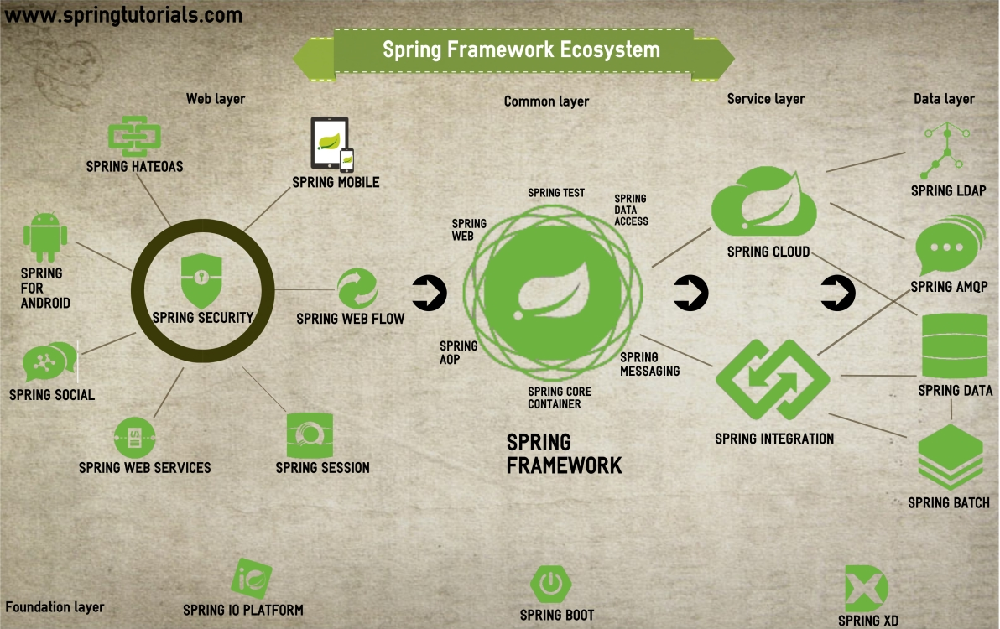

Daniel Krämer (M.Sc. Informatik)
Senior Software Engineer
Schwerpunkte
Software-Architektur
Integration und Migration
Clean Code
Testautomatisierung
DevOps
Trainings, Artikel, Vorträge
Java, Spring, Wicket, Microservices, …
24.10. - 26.10.22
Daniel Krämer

Daniel Krämer (M.Sc. Informatik)
Senior Software Engineer
Schwerpunkte
Software-Architektur
Integration und Migration
Clean Code
Testautomatisierung
DevOps
Trainings, Artikel, Vorträge
Java, Spring, Wicket, Microservices, …


Einführung in Microservices & Spring Boot
Überwindung von Einstiegshürden
Funktionen und Features werden mit Aufgaben erarbeitet
Software-Entwickler, die ein tiefgreifendes Verständnis der Funktionsweise und des Einsatzes von Microservices sowie deren Umsetzung mit Spring Boot lernen möchten.
Gute Java Kenntnisse
Grundkenntnisse des Spring Frameworks
Sicherheit im Umgang mit einer IDE (z. B. Eclipse oder IntelliJ)
Basiswissen zu HTTP, SQL, Transaktionen, JUnit
Erfahrung mit Maven
Beginn | 09:00 Uhr |
Kaffeepause | ca. 10:30 bis 10:45 Uhr |
Mittagspause | 12:00 bis 13:00 Uhr |
Kaffeepause | ca. 15:00 bis 15:15 Uhr |
Ende | 16:00 Uhr |
Spring Boot Guides
https://spring.io/guides/gs/spring-boot
Spring Boot Documentation
https://spring.io/projects/spring-boot
Baeldung
https://www.baeldung.com/spring-boot
Jetzt sind Sie dran!
Name
Anrede
Vorwissen
Erwartungen
Themenwünsche

Wiederholung Spring, Spring Boot (Grundlagen, JPA)
Spring Boot (REST, Starter), Microservices
Spring Security, Spring Cloud
Spring …
ist ein Framework (mehr als eine Bibliothek, kein Application Server)
benötigt nur JDK und einige Bibliotheken (jars)
kann fast überall integriert werden
kann fast alles integrieren


Prinzipien:
Dependency Injection (DI)
Aspektorientierte Programmierung (AOP)
Template-Method Pattern

Initiatoren: Rod Johnson, Jürgen Höller
Apache 2.0 Lizenz
Herausgeber: Pivotal Software Inc.
Projekt Lead: Jürgen Höller
Projektseite: https://spring.io/projects/spring-framework
Sourcen: https://github.com/spring-projects/spring-framework
Herausforderung
Lösung
Setzen der Abhängigkeiten durch externe Komponente!
private FxUserProvider userProvider;
private JdbcPreferencesRepository preferencesRepository;
private PreferencesServiceImpl preferencesService;
private void plumb() {
userProvider = new FxUserProvider();
preferencesRepository = new JdbcPreferencesRepository();
preferencesService = new PreferencesServiceImpl();
preferencesService.setUserProvider(userProvider);
preferencesService.setPreferencesRepository(preferencesRepository);
}Einfachheit (Verwendung von POJOs)
Testbarkeit
Verbreitungsgrad
Einfache Integration
Viele fertige Bausteine
Lego-Prinzip
Der ApplicationContext ist ein Container für Service-Objekte, den sogenannten Beans.
Er speichert diese Objekte bzw. deren Factories in einer Registry unter einem eindeutigen Namen, vergleichbar mit einer HashMap.
Beim Erzeugen von Objekten nutzt er diese Registry um Abhängigkeiten aufzulösen.
Nutzen den Debugger um sich den ApplicationContext zur Laufzeit anzusehen. |
Es gibt diverse Klassen, die das ApplicationContext-Interface implementieren, die wichtigsten sind:
ClassPathXmlApplicationContext für XML-Config
AnnotationConfigApplicationContext für Java-Config
StaticApplicationContext für Tests
Am flexibelsten ist der GenericApplicationContext, der über verschiedene AbstractBeanDefinitionReader
unterschiedliche Formate für die Context-Definition unterstützt.
Für Webapplikationen gibt es spezielle ApplicationContext Klassen:
XmlWebApplicationContext für XML-Config bei Webapps
AnnotationConfigWebApplicationContext für Java-Config bei Webapps
GenericWebApplicationContext ist das Gegenstück zu GenericApplicationContext für Webapps
Möglichkeiten, den Lebenszyklus einer Bean zu beeinflussen
Interfaces InitializingBean, DisposableBean und Lifecycle
JSR-250 Annotationen @PostConstruct und @PreDestroy
Explizite Angabe der init-method oder destroy-method per Konfiguration
public close/shutdown, abschaltbar über @Bean(destroyMethod="")
public class MyService implements InitializingBean, DisposableBean {
private static final Logger log = LoggerFactory.getLogger(MyService.class);
@Override
public void afterPropertiesSet() throws Exception {
log.info("service created");
}
@Override
public void destroy() throws Exception {
log.info("service destroyed");
System.out.println("service destroyed"); // falls Logging schon beendet wurde
}
}Möglichkeiten den ApplicationContext zu konfigurieren:
XML
Annotationen
Java-Methoden
Lambda Ausdrücke (seit Spring 5)
… und jede Kombination davon!
Java-Klasse zur Konfiguration des ApplicationContext
Kein Medienbruch (Refactoring, Compiler erkennt Fehler)
Weniger Boilerplate als bei XML
Trennung von Implementierung und Verdrahtung erfordert Disziplin
@Configuration
public class CarConfig {
// Bean mit Namen 'firstCar'
@Bean
Car firstCar() {
return new Car();
}
// Bean mit Name 'firstCar2' und Aliasen 'bobbyCar' und 'car2'
@Bean({"firstCar2", "bobbyCar", "car2"})
Car firstCar2() {
return new Car();
}
}// Ist Singleton, d. h. gibt es nur einmal!
@Bean
Engine engine() {
return new Engine("diesel", 48);
}
@Bean
Car realCar() {
Car car = new Car();
car.setColor("yellow");
car.setEngine(engine()); // Verdrahtung über Methode (Cache!)
return car;
}
@Bean
Car realCar2(Engine engine) { // Verdrahtung über Parameter
Car car = new Car();
car.setEngine(engine);
return car;
}Bgzl. Auflösung von Mehrdeutigkeiten siehe Dependency injection in @Bean method parameters.
| Annotation | Beschreibung |
|---|---|
@Configuration | Markiert eine Klasse als Konfigurationsklasse |
@Bean | Makiert eine Methode als Bean-Factory |
@Lazy | Bean wird nur bei Bedarf initialisiert |
@Nullable (bei Bean-Methode) | Bean darf |
@Scope | Legt den Scope einer Bean fest |
@Import | Abhängigkeiten aus anderer Config-Klasse importieren |
@ImportResource | Abhängigkeiten aus XML-Datei importieren |
Motivation
Verdrahten von Beans erfordert viel Boilerplate (unübersichtlich, pflegeintensiv)
Oft ist Verdrahtung eindeutig
Per Reflection machbar
| Annotation | Beschreibung |
|---|---|
@Autowired | Befüllt Property über Autowiring |
@Nullable (bei Abhängigkeit) | Abhängigkeit darf |
@Required (deprecated) | Abhängigkeit notwendig (nur bei Setter sinnvoll) |
@Primary | Legt die bevorzugte Bean fest |
@Qualifier | Makiert eine Bean oder eine Abhängigkeit |
Es gibt 3 Arten von Autowiring. Am häufigsten wird diese Variante verwendet:
@Autowired
private Engine engine;
@Autowired
private List<Feature> features;Eher selten:
@Autowired
public void setEngine(Engine engine) {
this.engine = engine;
}
@Autowired
public void setFeatures(List<Feature> features) {
this.features = features;
}private final Engine engine;
private final List<Feature> features;
@Autowired
public CarConstructorWiring(Engine engine, List<Feature> features) {
this.engine = engine;
this.features = features;
}Nur sinnvoll in Kombination mit annotationsbasierter Konfiguration.
Für Muss-Parameter in Kombination mit final empfohlen.
@Bean
@Primary
Engine gasEngine() {
return new Engine("gas", 68);
}
@Bean
Engine dieselEngine() {
return new Engine("diesel", 72);
}
@Bean
Car car(Engine engine) {
var car = new Car();
car.setEngine(engine);
return car;
}Wird häufig für Tests verwendet.
Aktivieren der annotationsbasierten Konfiguration
@Configuration
@ComponentScan("org.example")
public class SomeConfig {
// ...
}| Annotation | Beschreibung |
|---|---|
@ComponentScan | Festlegung der Packages, die für annotationsbasierte Konfiguration herangezogen werden |
@Component (@Service, @Repository, @Controller) | Markiert eine Klasse als Bean |
@Value | Wertangabe mit den Features der XML-Config |
Motivation
Manche Konfigurationswerte sind
zum Entwicklungszeitpunkt noch nicht bekannt,
sind abhängig von der Laufzeitumgebung oder
müssen nachträglich änderbar sein.
Im Java-Umfeld werden dafür meistens Properties-Dateien verwendet.
Diese enthalten einfache Key-Value Paare:
server.port=8081 debug: true
| Man kann entweder '=' oder ': ' als Trenner zwischen Schlüssel und Wert verwenden. |
Bei Spring bindet man eine Properties-Datei über die @PropertySource Annotation ein:
@Configuration
@PropertySource("classpath:app.properties")
public class MyJavaConfig {
//...
}Platzhalter der Form ${key} werden in Annotationsparameter durch die
entsprechenden Property-Werte ersetzt.
Häufig wird das in Kombination mit der @Value Annotation verwendet:
@Value("${server.port}")
private int serverPort;
@Value("http://localhost:${server.port}/")
private String serverUrl;
@Bean
SomeService someService(@Value("${debug}") boolean debug) {Einsatz von @Profile
Unterschiedliche Umgebungen (Produktion, Entwicklung) erfordern unterschiedliche Konfiguration.
Profile kommen zum Einsatz, wenn Einstellungen (Konfigurationswerte) nicht ausreichen.
Mit der Annotation @Profile("profilname") legt man fest, dass eine Konfiguration nur gelten
soll, wenn das entsprechende Profil aktiviert ist.
Die @Profile Annotation kann man sowohl auf eine ganze (Konfigurations-)Klassen als auch auf
einzelne Bean-Methoden anwenden.
Profile lassen sich mit & (und), | (oder), ! (Negation) und Klammern verknüpfen:
@Profile("production & (us-east | eu-central)")Man kann mehrere Profile gleichzeitig aktiveren, entweder programmatisch:
ctx.getEnvironment().setActiveProfiles("profile1", "profile2");Oder über die spring.profiles.active Property, z. B. mit:
-Dspring.profiles.active="profile1,profile2"
Wenn kein Profil aktiviert wurde, dann ist immer das default Profil aktiv.
Fragen?
Technisch
Klasse, Package
Modul/Library
Deployment Unit
Fachlich
Konzept
Produkt
Organisatorisch
Team
Abteilung
Warum modularisieren wir?
Beherrschung der Komplexität
Parallelsierung der Entwicklung
Auffindbarkeit von Code
Erleichterung der Wartung
Schwergewichtiges Software-Artefakt
Hohe Anzahl fachlicher Komponenten
Einheitliche technische Basis
Eine Deployment Unit
Ein Prozess zur Laufzeit
Nicht grundsätzlich ein Anti-Pattern!
Hohe (technische) Kopplung zwischen Komponenten
Lange Build Cycles
Einzelne Bestandteile nicht unabhängig skalierbar
Verzögerte Auslieferung neuer Features
Hoher Wartungsaufwand
Mangel an Agilität und Innovation

Organizations which design systems […] are constrained to produce designs which are copies of the communication structures of these organizations.
Barrieren in der Kommunikation → Brüche in der Software
Klassische Aufteilung
Fachseite
Entwickler
Datenbankspezialisten
Ops
Konsequenzen
Unrealistische Anforderungen
Keine Kontrolle über Daten
Wenig Details zu Fehlern

Microservices sind ein Architekturmuster der Informationstechnik, bei dem komplexe Anwendungssoftware aus unabhängigen Prozessen komponiert wird, die untereinander mit sprachunabhängigen Programmierschnittstellen kommunizieren. Die Dienste sind weitgehend entkoppelt und erledigen eine kleine Aufgabe. So ermöglichen sie einen modularen Aufbau von Anwendungssoftware.

Ein Microservice…
…läuft in einem eigenen Prozess.
…wird über das Netzwerk angesprochen.
…kann unabhängig deployed, erweitert oder skaliert werden.
…repräsentiert einen Bounded Context der Fachdomäne.
…ist nicht an die Technologie anderer Services gebunden.
…wird nur von einem Team entwickelt.
…hat ein unabhängiges Datenmodell.


Verteiltes System
Orchestrierung
Resilienz
Konsistenz
Debugging
Monitoring und Logging
Netzwerk
Performance
Zuverlässigkeit
Potentieller "Technologiezoo"
Bulkhead
Angelehnt an Schiffsbau (Schotten)
Separierung einzelner Bereiche
Beispiel: Aufteilung des Thread Pools
Circuit Breaker
Angelehnt an Elektrotechnik (Sicherung)
Steuerung des Durchflusses
Geschlossen: Alle Request durchlassen
Offen: Alle Requests abweisen (→ Defaults)
Halb offen: Begrenzte Anzahl an Requests durchl.


Klassische Transaktionen (ACID)
A tomicity: Atomare Durchführung von Änderungen
C onsistency: Konsistenzerhaltung
I solation: Isolation nebenläufiger Änderungen
D urability: Festschreibung der Änderungen
Two Phase Commit (2PC, XA)
ACID für verteilte Systeme
Phase 1: Commits vorbereiten
Phase 2: Commits durchführen
Pet Helland: "Grown-ups don’t use distributed transactions"
Gregor Hohpe: "Starbucks does not use two phase commit"
CAP Theorem
C onsistency: Zeitliche Konsistenz
A vailability: Verfügbarkeit
P artition Tolerance: Toleranz gegenüber Netzwerkpartitionen
Nur 2 von 3 Eigenschaften möglich!

CAP bei verteilten Systemen
Partitionstoleranz obligatorisch
Verfügbarkeit oder Konsistenz
Beispiel: Bestellsystem vs. Geldautomat
Meist BASE statt ACID
CAP bei Microservices
Keine verteilten Transaktionen
Aggregate (DDD) bestimmt Konsistenzgrenze
Eventual Consistency
Fehlerbehandlung
Stateful Retry (erfordert Idempotenz)
Fachliche Kompensation
Eigenständige Anwendung
GUI
Datenmodell
Logik
Persistenz
Lose Kopplung an andere Systeme
Integration bevorzugt über UI
Datenaustausch nur über APIs
Möglichst asynchrone Kommunikation
Entwicklung durch ein Team
Single Responsibility Prinzip
Kann aus Microservices bestehen

Makro-Architektur
Wie viele Services brauchen wir?
Wie groß darf ein Service sein?
Wie schneiden wir die Services?
Wie sollen die Schnittstellen aussehen?
Welche Technologiestacks erlauben wir?
Wie setzen wir Authentifikation, Monitoring und Logging um?
Mikro-Architektur
Wie sollte ein Service aufgebaut sein?
Welche Technologien nutzen wir im Detail?
Wie setzen wir Authorisierung um?
Wie schneiden wir die Services?
Wie sollte ein Service aufgebaut sein?
Wie groß sollte ein Service sein?
Wie viele Services brauchen wir?
Herangehensweise zur fachlichen Strukturierung einer Anwendung
Domänenmodell
Ubiquitious Language
Ausgangsbasis der Entwicklung
Klassifizierung enthaltener Elemente


Grenze innerhalb einer Domäne
Fachlichkeit
Datenmodell
Konsistenz
Organisation
Identifizierung
Clustering von Anforderungen (z.B. Use Cases)
Bestimmung von Abhängigkeiten
Kommunikationsbeziehungen und Machtverhältnisse zwischen Bounded Contexts
Separate Ways: Keine Integration
Open Host Service: Einseitige Bereitstellung von Schnittstellen
Conformist: Übernahme des fremden Modells
Anti-Corruption Layer: Adapter zu fremdem Modell
Customer-Supplier: Gleichberechtigte Aushandlung der Schnittstellen
Shared Kernel: Gemeinsame Verwendung eines Teilmodells
Visualisierung der Beziehungen

Für den großen Parkhausbetreiber „JustParkIt“ soll ein System zur Ausgabe, Nutzung, Abrechnung und Rücknahme von Tickets und Dauerparkausweisen umgesetzt werden. Im Rahmen der Anforderungserhebung wurden bereits einige User Stories ermittelt.
Aufgaben:
Gruppieren Sie die User Stories nach fachlichen Domänen und benennen Sie die so entstandenen Bounded Contexts.
Identifizieren Sie die jeweils beteiligten Akteure sowie Abhängigkeiten zwischen den Kontexten.
Modellieren Sie einen Dauerparkausweis in den einzelnen Kontexten. Wo gibt es Gemeinsamkeiten, wo zeigen sich Unterschiede?
Entwickeln Sie eine Context Map und benennen Sie die Beziehungen (→ Patterns) zwischen den Kontexten.
US-01: Als Kunde möchte ich mir an der Schranke ein Ticket ziehen, um ins Parkhaus einfahren zu können.
US-02: Als Kunde möchte ich an der Schranke meinen gültigen Dauerparkausweis nutzen, um ins Parkhaus einfahren zu können.
US-03: Als Parkhausbetreiber möchte ich eine Übersicht aller aktuell gültigen Dauerparkausweise pro Parkhaus online erhalten, um bei Bedarf weitere Ausweise nachbestellen zu können.
US-04: Als Kunde möchte ich mein bezahltes Ticket an der Schranke zurückgeben, um aus dem Parkhaus herausfahren zu können.
US-05: Als Kunde möchte ich an der Schranke meinen Dauerparkausweis nutzen, um aus dem Parkhaus herausfahren zu können.
US-06: Als Parkhausbetreiber möchte ich einen Dauerparkausweis sperren können, um säumigen Zahlern den Zugang zu den Parkhäusern zu verwehren.
US-07: Als Kunde mit Dauerparkausweis möchte ich die im aktuellen Monat angefallenen Kosten online einsehen, um eine Übersicht über meine Ausgaben zu erhalten.
US-08: Als Parkhausbetreiber möchte ich elektronische Zahlungen am Automaten an einen Zahlungsdienstleister weiterleiten, damit sich dieser um die Abwicklung kümmert.
US-09: Als Pförtner möchte ich die Schranke mit einem auf dem Dauerparkausweis aufgedruckten Code öffnen können, falls der Chip auf dem Ausweis selbst nicht mehr lesbar ist.
US-10: Als Kunde möchte ich einen Dauerparkausweis online für ein weiteres Parkhaus des Betreibers freischalten, um dort künftig mein Auto abstellen zu können.
US-11: Als Parkhausbetreiber möchte ich online eine Statistik über die durchschnittliche Parkdauer an einem Standort erhalten, um meine Angebote besser zuschneiden zu können.
US-12: Als Kunde möchte ich ein Ticket am Automaten bar bezahlen können, um anschließend aus dem Parkhaus herausfahren zu können.
US-13: Als Kunde möchte ich ein Ticket am Automaten mit Kreditkarte bezahlen können, um anschließend aus dem Parkhaus herausfahren zu können.
US-14: Als Kunde möchte ich die verschlossene Eingangstür zum Parkhaus mit meinem Ticket oder Dauerparkausweis öffnen können.
US-15: Als Kunde möchte ich meinen Dauerparkausweis monatlich per Kreditkarte bezahlen, um nicht in Verzug zu geraten.
US-16: Als Kunde möchte ich die hinterlegte eMail-Adresse zu meinem Dauerparkausweis ändern, um zeitnah über neue AGB benachrichtigt zu werden.
Wie sollen die Schnittstellen aussehen?
Öffentlich vs. intern
Änderbarkeit
Technologien
Generisch vs. client-spezifisch
Wartungsaufwand
Verständlichkeit
Information Hiding
Fein- vs. grobgranular
Datenmenge
Anzahl Calls
Kaskadierung
Blocking vs. non-blocking
Technologien
Prozessablauf
Domänenorientierung
Lose Kopplung
Idempotenz
Abwärtskompatibilität oder Versionierung
REST
Representational State Transfer
Architekturstil
Ressourcenorientiert
Hypermedia
OpenAPI
SOAP
Ursprünglich: Simple Object Access Protocol
Nachrichtenformat (XML)
Dokumenten- und funktionsorientiert
WS-* Erweiterungen
WSDL
Binäres RPC
Funktionsorientiert
Hohe Performance
Technologien: gRPC, Apache Thrift
Messaging
Austausch von Nachrichten über Broker
Lose Kopplung
Technologien: Apache ActiveMQ, Apache Kafka
Our Microservice API Patterns (MAP) distill proven solutions to recurring service interface design and specification problems such as finding well-fitting service granularities, promoting independence among services, or managing the evolution of a microservice API.
Aktuell in Entwicklung befindlich
Fragestellungen
Wie viele Schnittstellen sollten als API verfügbar sein?
Wie kann eine möglichst lose Kopplung erreicht werden?
Welche Daten sollten ausgetauscht werden und wie oft?
Wie sollten Nachrichten aussehen?

Kontext
Bereitstellung einer neuen API
Verwendung nicht allgemein bekannt
Problem
Wie kann die Nutzung der API explizit dokumentiert werden?
Wie kann die Dokumentation mit anderen Spezifikationen verbunden werden?
Lösung
Bereitstellung einer strukturierten API Beschreibung
Umsetzung: OpenAPI (REST), JSON API (REST), WSDL (SOAP)
Kontext
Bei Abruf eines Service werden viele Daten übermittelt
Client benötigt nur einen Teil davon
Problem
Wie kann der Abruf so eingeschränkt werden, dass der Client nur einen Teil der Daten erhält?
Lösung
Auslieferung der Daten in Chunks
Übermittlung eines Links zu weiteren Daten
Umsetzung: Hypermedia (REST)
Kontext
Service wird per Aufruf bezahlt
Verwendung eines Service muss einem Benutzer zugeordnet werden können
Einsatz eines Auth Frameworks zu umständlich
Problem
Wie kann ein Service Benutzer erkennen?
Lösung
Übermittlung eines API Keys (Token) durch den Benutzer
Umsetzung: HTTP Header, Cookie, Query Parameter
Kontext
API erfährt Breaking Changes
Alte Clients müssen weiterhin unterstützt werden
Problem
Wie können alte und neue API zeitgleich existieren?
Lösung
Versionierung der API
Umsetzung: URI, Payload
Spezifikation zur Beschreibung von REST APIs
Vorläufer: Swagger
Contract First vs. Code First
YAML oder JSON
Java Annotations
YAML
openapi: 3.0.0
info:
title: Sample Resource
description: Sample API to demonstrate OpenAPI annotations.
version: 1.0
servers:
- url: http://api.anderscore.com.com/v1
description: anderScore public API
- url: http://staging-api.anderscore.com
description: anderScore staging environment
paths:
/users:
get:
summary: Get all users.
description: Get all persisted anderScore users.
responses:
'200': # status code
description: A JSON array of user names
content:
application/json:
schema:
type: array
items:
type: stringAnnotations
@OpenAPIDefinition (info =
@Info(
title = "Sample Resource",
version = "1.0",
description = "Sample API to demonstrate OpenAPI annotations",
license = @License(name = "Apache 2.0", url = "http://foo.bar"),
contact = @Contact(url = "http://www.anderscore.com", name = "Daniel Krämer", email = "daniel.kraemer@anderscore.com")
)
)
public class SampleResource {
@GET
@Operation(summary = "Get all users", description = "Get all persisted anderScore users")
public Response getUsers() {
// ...
}
}Fachlicher Schnitt der Microservices nach Domain Driven Design
Ermittlung der Bounded Contexts
Ableiten der Context Map
Bestimmung der Qualitätsanforderungen und Einflussfaktoren
Auswahl geeigneter Technologien
Definition der APIs
Orientierung an Use Cases und DDD Services
Verwendung von Patterns
Dokumentation
Implementieren Sie den AbrechnungService:
Erstellen Sie einen REST Microservice mit dem Spring Boot Initializr.
Stellen Sie eine API bereit, mit der ein Parkticket vom Automaten als bezahlt deklariert werden kann.
Sehen Sie eine API vor, mit welcher sich die erfolgte Bezahlung eines Tickets überprüfen lässt.
Erstellen Sie den ZugangskontrollService
Generieren Sie einen weiteren Microservice.
Bieten Sie der Schranke eine API zum Prüfen eines Tickets an. Das Ergebnis kann "EXIT GRANTED" oder "EXIT DENIED" lauten.
Fragen Sie zur Ermittlung des Ergebnisses die Bezahlung beim AbrechnungService ab.
Was passiert, wenn der AbrechnungService nicht verfügbar ist? Wie gehen Sie damit um?
Testen Sie ihre Anwendung mit cURL oder SoapUI.
Bonus: Dokumentieren Sie die APIs mit OpenAPI.
Bonus: Implementieren Sie auch den Rest der Parkhausanwendung!
Context Map

Architektur einzelner Services
Verantwortung des jeweiligen Teams
Vorgaben des Architekten
Erlaubte Technologien und Frameworks
Schnittstellen
Mögliche Herangehensweise: Domain Driven Design
Hexagonale Architektur
Synonyme: Ports and Adapters, Zwiebelarchitektur
Strikte Trennung von Fachlichkeit und Technik
Dependency Inversion (DIP)
Domain: Daten und Geschäftslogik
Service: Orchestrierung der Geschäftslogik
Infrastruktur: Externe Kommunikation
Hexagonale Architektur
Ports
Anknüpfungspunkte
Definition durch innere Schichten
Adapters
Konterpart der Ports
Implementierung durch äußere Schichten
Aktiv vs. passiv
Stack
Spring Boot oder MicroProfile (z.B. Quarkus)
REST + OAuth oder Apache Kafka
Resilienz
Circuit Breaker
Client-side Load Balancing
Paketierung und Deployment
Executable jar
Docker
Kubernetes oder Docker Swarm
Zentrales Monitoring und Logging
Prometheus, Grafana
ElasticSearch, LogStash, Kibana
Form der Modularisierung
Herausforderungen eines verteilten Systems!
Schnitt mittels Domain Driven Design
Abgrenzung mittels Bounded Contexts und Context Map
Vielseitige Integrationsmöglichkeiten
Microservice API Patterns
Spring Boot makes it easy to create stand-alone, production-grade Spring based Applications that you can "just run".
We take an opinionated* view of the Spring platform and third-party libraries so you can get started with minimum fuss. Most Spring Boot applications need very little Spring configuration.
*: eigensinnig, rechthaberisch
Aufeinander abgestimmte Bibliotheksabhängigkeiten
Sinnvolle Vorgaben für automatische Konfiguration
Einheitliche Verwaltung von Einstellungen
Entwicklung und Ausführung ohne separaten Application-Server (dank fat jars)
Tools für Entwicklung und Monitoring
Große Sammlung aufeinander abgestimmter Open-Source Bibliotheksversionen
Sinnvolle Zusammenstellungen von Bibliotheken für verschiedene Anwendungsbereiche (Starter)
Plugins und Konfigurationseinstellungen für Gradle und Maven
Module zur automatischen Konfiguration
Für den Schnelleinstieg:
Wir bauen eine Aufgabenliste, bestehend aus
einem Backend-Server, der eine REST-Schnittstelle bereitstellt und die Tasks mittels JPA in einer HSQL-Datenbank speichert
einem Frontend-Server, der eine Thymeleaf basierte Oberfläche für das Backend bereitstellt
Ziel ist, zu verstehen, was im Hintergrund tatsächlich passiert, also wie Spring Boot das Spring-Framework nutzt, um die Funktionalität bereitzustellen.
Grundgerüst der Applikation mit Spring Initializr anlegen
Persistenzschicht implementieren
REST-Controller für Backend implementieren
Frontend implementieren
Web-Anwedung, mit der man
ein ausführbares Grundgerüst
einer Spring-Boot Applikation
erstellen kann
In IDEs integriert
(Spring-Tool-Suite,
IntelliJ IDEA)
Schritt 1: Spring Initializr
Erstellen Sie mit Spring Initializr (https://start.spring.io/) eine Spring-Boot Anwendung mit folgenden Einstellungen:
Einstellungen: | Java/Maven-Projekt mit Java-Version 11 |
Group: | spring-training |
Artifact: | lesson03-backend-rest |
Package: | boot.backend |
Dependencies: | Web, JPA, HSQLDB, Actuator, DevTools |
| "Depedencies/See all" zeigt alle verfügbaren Abhängigkeiten |
Packen Sie das heruntergeladene Projekt aus, bauen Sie es mit mvn clean verify
und führen Sie es mit mvn spring-boot:run aus.
Sehen Sie sich die Logausgaben an. Welche Informationen können Sie daraus ziehen?
Öffnen Sie http://localhost:8080/ im Browser.
Probieren Sie auch mal http://localhost:8080/actuator. Was können Sie damit machen?
Beenden Sie nun die Applikation mit Strg-C und importieren Sie das Projekt in Ihre IDE.
Alternativ können Sie auch direkt das Projekt lesson03-boot-backend-rest öffnen.
Woraus besteht das Projekt?
Sehen Sie sich die pom.xml an. Welche Teile davon sind Spring-Boot spezifisch?
Öffnen Sie die Lesson03BootBackendApplication Klasse. Was fällt Ihnen daran auf?
Wozu nützt der Lesson03BootBackendApplicationTests?
Spring Boot Applikationen werden über die application.properties konfiguriert. Details dazu finden
Sie im Abschnitt
Externalized Configuration
des Spring Boot Reference Guide. Der Anhang
Common application properties
gibt einen groben Überblick über die Stellschrauben von Spring Boot.
Tragen Sie nun debug=true in die application.properties ein und führen Sie Lesson03BootBackendApplicationTests aus.
In den Logausgaben erscheint jetzt ein CONDITIONS EVALUATION REPORT. Was besagt dieser Report?
Mit Spring Tool Suite 4 funktioniert die Code-Completion nur, wenn der Spring Boot Validations Builder
registiert ist. Andernfalls muss man .project um folgenden Eintrag ergänzen und einen Restart durchführen: |
<buildCommand>
<name>org.springframework.ide.eclipse.boot.validation.springbootbuilder</name>
<arguments>
</arguments>
</buildCommand>Sie haben zuvor nur einen kleinen Teil der verfügbaren Actuator-Endpoints gesehen.
Fügen Sie management.endpoints.web.exposure.include=* in die application.properties ein, um alle Endpoints zu sehen.
Starten Sie die Applikation und öffnen Sie erneut http://localhost:8080/actuator/.
Ergründen Sie die verschiedenen Endpunkte. Warum sind nicht standardmäßig alle Endpunkte verfügbar?
Optional: Verwenden Sie jconsole, um die Actuator JMX-Beans zu ergründen.
Weitere Informationen zu Actuator finden Sie der Referenz-Doku, Abschnitt Spring Boot Actuator: Production-ready features.
| Mit Firefox sind Links in dem zurückgegebenen JSON navigierbar. |
Standardmäßig erscheinen bei Spring-Boot alle Logausgaben auf der Konsole.
Lenken Sie mit logging.file.path=target/app.log die Logausgaben zusätzlich in eine Datei um.
Starten Sie die Applikation neu prüfen Sie den Inhalt der Logdatei.
Vewenden Sie auch den http://localhost:8080/actuator/logfile Link.
Weitere Hinweise dazu finden Sie in der Referenz-Doku, Abschnitt Logging/File Output.
Spring-Boot bringt einige Features mit, die wir uns im folgenden genauer ansehen.
Einige davon haben wir bereits kennengelernt.
Actuator bietet Features für den Betrieb:
Monitoring
Management
Endpoints per JMX oder REST
Micrometer Support, siehe Referenz-Doku, Abschnitt Metrics
Mit den Developer Tools werden Änderungen ohne Neustart der Applikation sichtbar
Arbeitet mit 2. ClassLoader für geänderte Klassen
Führt bei Änderungen automatisch einen Restart durch, d. h. der ApplicationContext wird neu initialisiert, ohne dass alle Klassen neu geladen werden müssen
Unterstützt LiveReload (ein Browser-Plugin, welches den Klick auf den Refresh-Button erspart)
Ist kein vollwertiger Ersatz für JRebel
| Bei IntelliJ ist ein expliziter Rebuild (Ctrl-Shift-F9) notwendig, um einen Restart auszulösen |
Das Spring-Boot Parent-POM liefert sinnvolle Voreinstellung, Maven-Plugins und aufeinander abgestimmte Versionen für 3rd Party Bibliotheken:
<parent>
<groupId>org.springframework.boot</groupId>
<artifactId>spring-boot-starter-parent</artifactId>
<version>2.7.4</version>
<relativePath /> <!-- lookup parent from repository -->
</parent>Alternativ kann man nur die aufeinander abgestimmten Abhängigkeiten verwenden (das erspart Versionsangaben). Siehe Using Spring Boot without the Parent POM in Referenz-Doku:
<dependencyManagement>
<dependencies>
<dependency>
<groupId>org.springframework.boot</groupId>
<artifactId>spring-boot-dependencies</artifactId>
<version>2.7.4</version>
<scope>import</scope>
<type>pom</type>
</dependency>
</dependencies>
</dependencyManagement>Man bindet es folgendermaßen ein:
<build>
<plugins>
<plugin>
<groupId>org.springframework.boot</groupId>
<artifactId>spring-boot-maven-plugin</artifactId>
</plugin>
</plugins>
</build>Es bietet:
Erstellung ausführbarer "fat" JARs
Ausführung mit mvn spring-boot:run
Siehe auch Using the Maven Plugin in der Referenz-Doku.
Erzeugung von META-INF/build-info.properties. Siehe
Generate Build Information.
Erzeugung von git.properties. Siehe
Generate Git Information.
Anpassung einzelner Bibliotheksversionen. Siehe Customize Dependency Versions.
Erstellung einer WAR Datei. Siehe Create a Deployable War File.
| Alle bisher genannten Features sind auch für Gradle verfügbar. |
Meta-Annotation für:
@SpringBootConfiguration (1)
@EnableAutoConfiguration (2)
@ComponentScan(excludeFilters = {
@Filter(type = FilterType.CUSTOM, classes = TypeExcludeFilter.class), (3)
@Filter(type = FilterType.CUSTOM, classes = AutoConfigurationExcludeFilter.class) }) (4)| 1 | Marker für Tests, sonst wie @Configuration |
| 2 | Auto-Konfiguration aktivieren |
| 3 | Verarbeitet alle TypeExcludeFilter Beans (nützlich fürs Testen) |
| 4 | Auto-Config-Klassen ausschließen |
Wichtigster Parameter ist exclude, um einzelne Autokonfigurationen auszuschließen.
→ Javadocs.
In der Regel ist eine Spring-Boot Applikation eine Config-Klasse mit einer main Methode:
@SpringBootApplication
public class MyBootApplication {
private static final Logger log = LogManager.getLogger(MyBootApplication.class);
public static void main(String[] args) {
SpringApplication.run(MyBootApplication.class, args);
}
}Wenn man spezielle Einstellungen benötigt, kann man SpringApplication auch selbst erzeugen:
@SpringBootApplication
public class MyCustomizedBootApplication {
private static final Logger log = LogManager.getLogger(MyCustomizedBootApplication.class);
public static void main(String[] args) {
SpringApplication application = new SpringApplication(MyCustomizedBootApplication.class);
customize(application);
application.run();
}
private static void customize(SpringApplication application) {
application.addListeners(new ApplicationListener<ApplicationEvent>() {
@Override
public void onApplicationEvent(ApplicationEvent event) {
log.info(() -> "Application Event: " + event);
}
});
}
}@SpringBootApplication
public class MyBootWebApplication extends SpringBootServletInitializer {
@Override
protected SpringApplicationBuilder configure(SpringApplicationBuilder builder) {
return builder.sources(MyBootWebApplication.class); (1)
}
public static void main(String[] args) { (2)
SpringApplication.run(MyBootWebApplication.class, args);
}
}| 1 | Zeigt, wie man eine Konfigurationsklasse hinzufügt. (Nicht notwendig, wenn SpringBootServletInitializer selbst eine
Konfigurationsklasse ist.) |
| 2 | Dank der main Methode ist für die Entwicklung kein Application-Server notwendig. |
Beans, die das CommandLineRunner Interface implementieren werden unmittelbar nach Initialisierung
des ApplicationContext ausgeführt.
Die Ausführungsreihenfolge kann man über die @Order Annotation oder das Ordered Interface beeinflussen.
@Bean
CommandLineRunner commandLineArgsInitializer() {
return new CommandLineRunner() {
@Override
public void run(String... args) throws Exception {
log.info(() -> "Command-Line: " + Arrays.toString(args));
}
};
}ApplicationRunner unterscheidet sich von CommandLineRunner nur dadurch, dass aus den Befehlszeilenargumenten
bereits die Optionen herausgefiltert sind.
Optionen sind Argumente der Form --opt=wert.
@Bean
ApplicationRunner interpretedArgsInitializer() {
return new ApplicationRunner() {
@Override
public void run(ApplicationArguments args) throws Exception {
log.info(() -> "Options: " + args.getOptionNames().stream()
.map(name -> name + ": " + args.getOptionValues(name))
.collect(Collectors.joining(", ")));
}
};
}@SpringBootTest ist Meta-Annotation für:
@BootstrapWith(SpringBootTestContextBootstrapper.class)
@ExtendWith(SpringExtension.class)Für JUnit-4 ist zusätzlich @RunWith(SpringRunner.class) notwendig.
Sucht im gleichen Package nach @SpringBootConfiguration und verwendet diese.
(Deswegen sollte es nur eine Config-Klasse geben, die mit @SpringBootConfiguration annotiert ist.)
Rangfolge für Einstellungen (Auszug):
Befehlszeilenargumente (z. B. --server.port=7777)
ServletConfig bzw. ServletContext Init-Parameter
JNDI Attribute von java:comp/env
System-Properties (z. B. -Dserver.port=7777)
Umgebungsvariablen
application-{profile}.properties im lokalen Verzeichnis
application-{profile}.properties im JAR
application.properties im lokalen Verzeichnis
application.properties im JAR
Mit @PropertySource Annotationen an den @Configuration Klassen
Default Properties, die mit SpringApplication.setDefaultProperties angegeben wurden
Spring Boot Applikationen suchen die application.properties
im /config Unterverzeichnis des aktuellen Verzeichnisses
im aktuellen Verzeichnis
in einem /config Package im Classpath
im Wurzelverzeichnis des Classpath
Dieses Verhalten lässt sich über spring.config.name und spring.config.location ändern.
| Alternativ zu '.properties' Dateien kann man auch → YAML verwenden. |
Fragen?
Wie funktioniert das?
Anbindung relationaler Datenbanken (OR-Mapping)
Maßgeblicher Einfluss: Hibernate
Als → JSR 220 im Jahr 2006 erstmals veröffentlicht
Aktuelle Version 3.0 ist 2020 mit Jakarta EE 9 offiziell erschienen
Inzwischen unter der Obhut der Eclipse Foundation: → Eclipse Project for JPA
Heute: "Jakarta Persistence"
Persistence Provider: Hibernate, EclipseLink, TopLink, OpenJPA
Referenzimplementierung: EclipseLink (früher: Hibernate)
Datenbankunabhängig
Mapping-Metadaten über Java-Annotationen (oder XML)
Abfragen über Java Persistence Query Language (JPQL) oder Criteria API
@Entity | Markiert Klasse als JPA-Entity |
@Table(name="CUST") | Ordnet Datenbanktabelle zu |
@Column(name="CUST_ID") | Ordnet Spaltenname zu |
@Id | Markiert Spalte als Primärschlüssel |
@GeneratedValue | Generiert IDs |
@Enumerated(EnumType.STRING) | Enum-Namen als String speichern |
@OneToOne, @OneToMany, @ManyToOne, @ManyToMany | Beziehungen |
@Entity // Objekt in eigener Datenbanktabelle speichern
@Table(name = "TASK") // Tabellename
public class TaskEntity {
public enum State {
OPEN, STARTED, DONE
}
@Id // Primärschlüssel
@GeneratedValue // wird automatisch generiert
@Column(name = "TASK_ID") // expliziter Spaltenname
private Long id;
private String description;
private Instant dateDue;
@Enumerated(EnumType.STRING) // als String speichern
private State state;
// Getter, Setter, etc.
}JPA Begriffe
Menge persistenter (eindeutiger) Entity-Objekte (in Memory)
Managed Lebenszyklus der Entities
Ist mit einer Transaktion verknüpft
EntityManager InterfaceSchnittstelle zur Interaktion mit Persistence Context (CRUD)
"Generisches DAO"
Menge der Entities, die vom EntityManager verwaltet werden können
Wird durch EntityManagerFactory repräsentiert
Entity-Objekt, das nicht mit einem Persistence Context verbunden ist (nach Commit)
@PersistenceUnit
EntityManagerFactory emf;
@PersistenceContext
ContextEntityManager em;EntityManagerFactory emf = javax.persistence.Persistence.createEntityManagerFactory("Order");
EntityManager em = emf.createEntityManager()EntityManagerFactory factory = Persistence.createEntityManagerFactory("Tasks"); // Name der Persistence Unit
EntityManager em = factory.createEntityManager();
Query query = em.createQuery("select t from TaskEntity t");
List<TaskEntity> tasks = query.getResultList();
tasks.forEach(System.out::println);Die Persistence Unit wird in META-INF/persistence.xml definiert.
<?xml version="1.0" encoding="UTF-8" ?>
<persistence xmlns="http://xmlns.jcp.org/xml/ns/persistence"
xmlns:xsi="http://www.w3.org/2001/XMLSchema-instance" version="2.2"
xsi:schemaLocation="http://xmlns.jcp.org/xml/ns/persistence
http://xmlns.jcp.org/xml/ns/persistence/persistence_2_2.xsd">
<persistence-unit name="Tasks" transaction-type="RESOURCE_LOCAL">
<class>boot.backend.repository.TaskEntity</class>
<properties>
<property name="javax.persistence.jdbc.driver" value="org.hsqldb.jdbc.JDBCDriver" />
<property name="javax.persistence.jdbc.url" value="jdbc:hsqldb:mem:mymemdb" />
<property name="javax.persistence.jdbc.user" value="sa" />
<property name="javax.persistence.jdbc.password" value="" />
<property name="hibernate.dialect" value="org.hibernate.dialect.HSQLDialect" />
<property name="hibernate.hbm2ddl.auto" value="create" />
</properties>
</persistence-unit>
</persistence>Datenbankverbindung hart verdrahtet
In Java EE Umgebung nicht notwendig
@Bean
public LocalContainerEntityManagerFactoryBean entityManagerFactory() {
LocalContainerEntityManagerFactoryBean em = new LocalContainerEntityManagerFactoryBean();
em.setDataSource(dataSource()); (1)
em.setPackagesToScan(new String[] { "boot.backend.repository" }); (2)
JpaVendorAdapter vendorAdapter = new HibernateJpaVendorAdapter();
em.setJpaVendorAdapter(vendorAdapter);
em.setJpaProperties(additionalProperties());
return em;
}
Properties additionalProperties() {
Properties properties = new Properties();
properties.setProperty("hibernate.dialect", "org.hibernate.dialect.HSQLDialect");
properties.setProperty("hibernate.hbm2ddl.auto", "create"); (3)
return properties;
}| 1 | Datenbankverbindung über Spring-Bean (mit entsprechenden Konfigurationsmöglichkeiten) |
| 2 | Angabe der Entity-Klassen, die zur der Persistence Unit gehören |
| 3 | Automatische Schemagenierung mit Hibernate |
Mögliche Werte für hibernate.hbm2ddl.auto:
| Wert | Beschreibung |
|---|---|
none | Nichts tun |
validate | Nur Schema validieren, keine Datenbankänderungen |
update | Schema aktualisieren |
create | Schema neu anlegen, löscht bestehende Daten |
create-drop | Wie create, löscht das Schema aber sobald die |
@PersistenceContext
private EntityManager entityManager;
@Test
public void test() {
Query query = entityManager.createQuery("select t from TaskEntity t");
List<TaskEntity> tasks = query.getResultList();
tasks.forEach(System.out::println);
}Oder alternativ über die EntityManagerFactory:
@Autowired
private EntityManagerFactory entityManagerFactory;
@Test
public void testUsingEntityManagerFactory() {
EntityManager em = entityManagerFactory.createEntityManager();
Query query = em.createQuery("select t from TaskEntity t");
List<TaskEntity> tasks = query.getResultList();
tasks.forEach(System.out::println);
}JpaTemplate und JpaDaoSupport sind seit Spring 3.1 deprecated. |
Konzepte sind weitgehend identisch!
javax.persistence | org.hibernate |
EntityManagerFactory | SessionFactory |
EntityManager | Session |
JPQL | HQL |
@Bean
public LocalSessionFactoryBean sessionFactory(DataSource dataSource) {
LocalSessionFactoryBean sessionFactory = new LocalSessionFactoryBean();
sessionFactory.setDataSource(dataSource);
sessionFactory.setPackagesToScan("com.anderscore.hibernate.entity");
sessionFactory.setHibernateProperties(hibernateProperties());
return sessionFactory;
}
@Bean
public TransactionManager txManager(SessionFactory sessionFactory) {
HibernateTransactionManager tx = new HibernateTransactionManager();
tx.setSessionFactory(sessionFactory);
return tx;
}
private Properties hibernateProperties() {
Properties props = new Properties();
props.setProperty("hibernate.hbm2ddl.auto", "create-drop");
props.setProperty("hibernate.dialect", "org.hibernate.dialect.HSQLDialect");
return props;
}Gegeben sei folgendes Datenmodell einer Software zur Verwaltung von Trainings:
Öffnen Sie das Projekt lesson03-boot-jpa und machen Sie sich mit den Entities, den DaoTests und dem
SQL-Skript init-schema.sql vertraut.
Versehen Sie die Entities so mit JPA-Annotationen, dass diese zum gegebenen Datenbankschema passen.
Implementieren Sie konkrete Klassen zu den DAO-Interfaces, indem Sie den EntityManager injekten und entsprechend verwenden.
Deklarieren Sie Ihre DAO-Implementierungen als Spring Beans.
Aktivieren Sie die DaoTests.
Führen Sie ein Refactoring durch, sodass die DAOs keine Code-Duplikate mehr enthalten.
Optional: Kopieren Sie die Klasse DaoTests, ersetzen Sie @SpringBootTest durch @SpringJUnitTest
und konfigurieren Sie DataSource, LocalContainerEntityManagerFactoryBean und TransactionManager selbst.
Optional: Ersetzen Sie JPA + Hibernate durch Plain-Hibernate.
Wann abhängige Entities laden?
FetchType.EAGER
Laden mit einbindender Entity
Ziel: Reduktion der Queries
Herausforderungen: ungenutzte Daten, Speicherverbrauch
Default bei @OneToOne und @ManyToOne
FetchType.LAZY
Laden erst bei tatsächlichem Zugriff (Proxy)
Ziel: Reduktion der Datenmenge
Herausforderungen: Hibernate Session, n+1 Issues
Default bei @OneToMany, @ManyToMany
Gegenstand von Performance-Optimierungen (und Bugs…)
public class Course {
@OneToMany(fetch = FetchType.EAGER)
private List<Training> trainings;
// ...
}public class Trainee {
@Convert(converter = TraineeNameConverter.class)
private TraineeName traineeName;
// ...
}@Converter
public class TraineeNameConverter implements AttributeConverter<TraineeName, String> {
@Override
public String convertToDatabaseColumn(TraineeName traineeName) {
}
@Override
public TraineeName convertToEntityAttribute(String dbTraineeName) {
}
}Problem: Attribut einer Entity lässt sich nicht auf Spalte abbilden
Beispiel: Vor- und Nachname getrennt vs. zusammen
Lösung: Definition eines eigenen Converters
Spring Data’s mission is to provide a familiar and consistent, Spring-based programming model for data access while still retaining the special traits of the underlying data store.
Ähnliche Verwendung von SQL und NoSQL Datenbanken
Minimierung von "Boilerplate" Code
public interface TaskRepository extends
JpaRepository<TaskEntity, Long>, // Spring Data und JPQL
JpaSpecificationExecutor<TaskEntity> // JPA criteria API
{
List<TaskEntity> findTaskEntitiesByStateOrderByDateDueDesc(TaskEntity.State state); (1)
@Query("select t from TaskEntity t where t.state = :state order by t.dateDue desc") (2)
List<TaskEntity> findByJpaqlQuery(@Param("state") TaskEntity.State state);
}| 1 | Einfache Abfragen generiert Spring-Data direkt aus dem Methodennamen |
| 2 | Alternativ kann man die JPQL Abfrage über die @Query Annotation angeben |
Das JpaRepository Interface bietet bereits eine Menge vorgefertigter Abfragemethoden:
@NoRepositoryBean
public interface JpaRepository<T, ID> extends PagingAndSortingRepository<T, ID>, QueryByExampleExecutor<T> {
List<T> findAll();
List<T> findAll(Sort var1);
List<T> findAllById(Iterable<ID> var1);
<S extends T> List<S> saveAll(Iterable<S> var1);
// ...
}public interface PagingAndSortingRepository<T, ID extends Serializable> extends CrudRepository<T, ID> {
Iterable<T> findAll(Sort sort);
Page<T> findAll(Pageable pageable);
}CrudRepository und PagingAndSortingRepository sind nicht auf RDBMS beschränkt!
public interface CrudRepository<T, ID extends Serializable> extends Repository<T, ID> {
<S extends T> S save(S entity);
T findOne(ID primaryKey);
Iterable<T> findAll();
Long count();
void delete(T entity);
boolean exists(ID primaryKey);
}Konfiguration:
@Configuration
@EnableTransactionManagement
@EnableJpaRepositories(basePackageClasses = TaskRepository.class)Zugriff auf Daten:
@Autowired
private TaskRepository taskRepository;
@Test
public void testFindAll() {
List<TaskEntity> tasks = taskRepository.findAll();
tasks.forEach(System.out::println);
}spring.jpa.hibernate.show_sql=true (1)
spring.jpa.hibernate.format_sql=true (2)
logging.level.org.hibernate.SQL=debug (3)
logging.level.org.hibernate.type.descriptor.sql=trace (4)| 1 | Ausgabe der SQL-Statements über die hibernate.show_sql Property aktivieren (unabhängig vom Logger) |
| 2 | SQL-Statements formatiert ausgeben (gilt auch für Logger) |
| 3 | Unabhängig davon gibt Hibernate alle SQL-Statements aus, wenn das Loglevel für org.hibernate.SQL auf DEBUG gesetzt wird. |
| 4 | Mit Loglevel TRACE für org.hibernate.type.descriptor.sql gibt Hibernate alle SQL-Parameter aus |
spring.datasource.url=jdbc:hsqldb:hsql://localhost:9001/xdb
spring.datasource.username=sa
spring.datasource.password=
spring.jpa.hibernate.ddl-auto=updateÜber JpaRepository kann man nur fixe (zur Compilezeit bekannte) Abfragen ausführen
Alternativ kann man einen JPQL-String zusammensetzen und mit EntityManager ausführen
Die Criteria API bietet eine objektorientierte, typsichere Schnittstelle, um dynamisch (zur Laufzeit) JPQL-Abfragen zusammenzusetzen
Alternative: → Querydsl (wird von Spring unterstützt)
CriteriaBuilder cb = em.getCriteriaBuilder();
CriteriaQuery<TaskEntity> q = cb.createQuery(TaskEntity.class);
Root<TaskEntity> from = q.from(TaskEntity.class);
q.select(from);
TypedQuery<TaskEntity> query = em.createQuery(q);
List<TaskEntity> tasks = query.getResultList();
tasks.forEach(System.out::println);Es sind zwei Schritte notwendig:
Erstellung einer CriteriaQuery mittels CriteriaBuilder
Ausführung der Abfrage mit createQuery
public class TaskSearchCriteria {
private final State state;
}public class TaskSpecification implements Specification<TaskEntity> {
private final TaskSearchCriteria criteria;
public TaskSpecification(TaskSearchCriteria criteria) {
super();
this.criteria = criteria;
}
@Override
public Predicate toPredicate(Root<TaskEntity> root, CriteriaQuery<?> query, CriteriaBuilder builder) {
query.orderBy(builder.desc(root.get("dateDue")));
return builder.equal(root.get("state"), criteria.getState());
}
}TaskSpecification spec = new TaskSpecification(new TaskSearchCriteria(State.STARTED));
List<TaskEntity> tasks = taskRepository.findAll(spec);
tasks.forEach(System.out::println);Die Suchkriterien werden normalerweise als Value-Objekt übergeben, welches
mit den Benutzereingaben aus einem Abfrageformular befüllt ist
(in diesem Fall TaskSearchCriteria)
Die Specification intialisiert damit eine CriteriaQuery, die von Spring-Data in der
Methode toPredicate neben CriteriaBuilder und Root übergeben wird.
Komplementieren Sie die DAOs aus Aufgabe 1 durch alternative Spring Data Repositories, indem Sie entsprechende Interfaces definieren.
Erstellen Sie eine Kopie von DaoTests unter dem Namen RepositoryTests und testen Sie die Repositories auf
gleiche Weise.
Bearbeiten Sie die Aufgaben und Fragen in TaskRepositoryTest aus dem Projekt lesson03-boot-backend-rest:
// Frage 1: Was bewirkt das "spring.datasource.url="?
@SpringBootTest(properties = "spring.datasource.url=")
// Frage 2: Wozu ist @Transactional notwendig?
@Transactional// Frage 3: Warum ist kein exakter Vergleich bei 'dateDue' möglich?
assertThat(task1).isEqualToIgnoringGivenFields(task2, "dateDue");
assertThat(task1.getDateDue()).isCloseTo(task2.getDateDue(), OFFSET);Konfigurieren Sie das Logging so, dass die SQL-Statements ausgegeben werden
Konfigurieren Sie über die application.properties eine Datenbankverbindung zu einem
HSQLDB-Server. Sie können hsqldb-server verwenden, um einen entsprechenden
Server zu starten. Lassen Sie die Tests gegen diesen Server laufen und sehen Sie sich
den Inhalt der TASK Tabelle an.
Optional: Finden Sie mit dem Debugger heraus, was beim Ausführen einer Repository-Methode geschieht.
Experimentieren Sie!
Finder
Queries
Paging & Sorting
List<Course> findByTitleAndDuration(String title, int duration);
List<Course> findTop3ByDuration(int duration);
List<Course> findByTitleLike(String pattern);
List<Course> findByTitleIn(Set<String> titles);
List<Course> findByDurationBetween(int startDuration, int endDuration);
List<Course> findByTitleOrderByTitleAsc(String title);@Query("SELECT c FROM Course c WHERE c.duration = :duration")
List<Course> loadCoursesJpql(@Param("duration") int duration);
@Query(value = "SELECT * FROM COURSES c WHERE c.duration = :duration", nativeQuery = true)
List<Course> loadCoursesNative(@Param("duration") int duration);@Query(value = "SELECT c FROM Course c")
List<Course> loadCoursesSorted(Sort sort);Pageable request = PageRequest.of(0, 1000, Sort.by("title").descending().and(Sort.by("duration")));
Page<Course> page = repository.findAll(request);
List<Course> courses = page.getContent();
Pageable nextRequest = page.nextPageable();Erweitern Sie das in Aufgabe 2 erstellte CourseRepository um zwei zusätzliche Finder-Methoden:
Laden aller Kurse, deren Titel einem anzugebenden Pattern entspricht.
Paginiertes Laden aller Kurse mit einer Länge zwischen einem anzugebenden Minimal- und Maximalwert.
Fügen Sie den in Aufgabe 2 angelegten RepositoryTests eine weitere Testmethode hinzu, welche die beiden neuen Finder
des CourseRepository testet. Testdaten können Sie automatisiert über das SQL-Skript init-data.sql einspielen.
Laden aller Kurse, deren Titel den Begriff "Datenbanken" enthält.
Laden der ersten zwei Kurse mit einer Dauer zwischen 3 und 5 Tagen, aufsteigend sortiert nach ihrer Dauer.
JPA & Hibernate
Spring
Tests
Konfiguration über Spring
Connection Pool verwenden
Injection des EntityManagers
Einfache CRUD-Operationen in abstraktes DAO auslagern
Naming Conventions in Java und DB beachten
Lazy Loading bei Bedarf punktuell deaktivieren
Entities nicht an UI weitergeben
Spring Data Repositorys nutzen, sofern möglich
JPQL und Criteria API nur verwenden, wenn nötig
@Transactional richtig anwenden
Integration Tests nur für Repositorys und DAOs
Unit Tests für Services (Business Logic)
In-memory DB verwenden, sofern möglich
Fragen?
Was ist das?
Steht für Representational State Transfer
Begriff: Doktorarbeit von Roy Fielding aus dem Jahr 2000
Technologie für Maschine zu Maschine Kommunikation
Fußt auf den Prinzipien des Web (Web für Maschinen)
Eine REST-API muss 5 Bedingungen erfüllen
Strikte Trennung der Systeme
Verbindung kann unterbrochen sein
Keine Sitzungsinformation auf dem Server
(Andernfalls nur REST-artig)
Zustand (Sitzung) wird auf Client vorgehalten
Nachrichten sind selbstbeschreibend
Jede Anfrage muss alle notwendigen Informationen enthalten, damit der Server diese verarbeiten kann (inkl. Sitzungsinformationen)
Jede Antwort muss alle Informationen enthalten, die der Client benötigt, um die Sitzung zu aktualisieren
Antworten müssen Informationen enthalten, ob und wie lange gecached werden kann
Client kann nicht davon Ausgehen, dass Antwort direkt vom Server kommt
Zwischen Client und Server kann diverse Middleware liegen
⇒ Erhöht Skalierbarkeit und Ausfallsicherheit
Einhaltung der HTTP-Spezifikation
Ein Vertrag für alle Belange
Richtlinien der einheitlichen Schnittstelle:
Ressourcen basiert (URIs zur Identifizierung, repräsentationsunabhängig)
Bearbeitung der Ressourcen über deren Repräsentation
Selbstbeschreibende Nachrichten (jede Nachricht enthält explizt alles, was zu deren Verarbeitung notwendig ist, z. B. Typ, Cachbarkeit)
Hypermedia as the Engine of Application State (HATEOS)
Client-Request enthält alle notwendigen Zustandsinformationen, die der Server benötigt, um den Request zu bearbeiten. Der Server weiß (speichert) nichts zu dem Client.
Der Server muss in seiner Antwort jeglichen Zustand an den Client übertragen, der für den nächsten Schritt notwendig ist.
Der Client übertägt die Zustandsinformation in Form von URLs, Request-Parametern, Request-Headern und dem Request-Inhalt (Body). Der Server überträgt Zustand mittels dem Inhalt der Antwort (Body), den Headern und dem Response-Code.
Daneben versteht man unter HATEOAS auch, dass Antworten im Inhalt oder im Header (Location, Link) die Links zu den zurückgegeben Objekten und ggf. zu weiterführenden Objekten enthalten.
Server kann Funktionalität auf den Client übertragen (z. B. JavaScript-Code)
Resourcen (Dinge) werden über URIs identifiziert
(es kann mehrere URIs geben, die auf die gleiche Ressource zeigen)
Resourcen sind unabhängig von deren Repräsenation (verschiedene Repräsenationen möglich)
Aktionen werden über HTTP-Verben (GET, POST, PUT, DELETE) angegeben
Repräsenationen (JSON, XML, HTML, PDF, etc.) werden über den Content-Type (MIME) angegeben
⇒ URLs werden zum Adressieren von Ressourcen verwendet
| REST URLs | SOAP-RPC URLs |
|---|---|
Dinge | Aktionen |
Substantive | Verben |
Die Repräsentationen sind das, was tatsächlich zwischen Client und Server übertragen wird
Sie geben den Ressourcen Zustand (oder einen Teil davon) wieder
Umfassen neben Nutzdaten auch Metadaten (Typinformationen)
Typischerweise JSON oder XML, kann aber bliebiges Format sein (z. B. PDF, HTML, …)
Skalierbarkeit
Einfachheit
Wartbarkeit
Sichtbarkeit
Portierbarkeit
Zuverlässigkeit
GET | idempotent und sicher | Eine (Menge von) Ressource(n) über ihre URI abrufen |
|---|---|---|
POST | Erstellt eine Ressource | |
PUT | idempotent | Eine (Menge von) Ressource(n) anhand ihrer URI ändern (vollständig ersetzen) |
PATCH | Eine Ressource ändern (nur einzelne Attribute) | |
DELETE | idempotent | Entfernt eine Ressource anhand ihrer URI |
IDs sind immer Bestandteil der URL (Parameter nur zum Filtern)
Nur Substantive (Verben sind ein Bad Smell)
Plural
Nur Kleinbuchstaben und '-' zur Trennung
/users für eine Menge und /users/123 für einzelne Ressource
Beispiel: account/payment statt account/pay
200 OK | Erfolg (normale Antwort) |
201 CREATED | Erfolgreich erstellt (Antwort auf POST) |
204 NO CONTENT | Erfolg, aber kein Inhalt (Antwort auf DELETE) |
400 BAD REQUEST | Anfrage kann nicht verarbeitet werden (Validierungsfehler) |
401 UNAUTHORIZED | Notwendige Authentifizerung fehlt (z.B. kein Token vorhanden) |
403 FORBIDDEN | Berechtigung nicht ausreichend |
404 NOT FOUND | Ressource existiert nicht |
405 METHOD NOT ALLOWED | HTTP-Methode für die entsprechende URI nicht anwendbar |
409 CONFLICT | Bearbeitung der Anfrage würde zu Inkonsistenzen führen |
410 GONE | Die Ressource wurde gelöscht (wenn das bekannt ist, sonst 404) |
415 UNSUPPORTED MEDIA TYPE | Format der übertragenen Daten nicht untersützt |
500 INTERNAL SERVER ERROR | Unerwarteter Fehler auf Server |
JSON-API
Servlet API seit 1996 (aktuell: seit 2021 Jakarta Servlet 6.0 als Teil von JakartaEE 10)
Servlets können aus Java Server Pages (JSPs) erzeugt werden
Werden als WAR deployed
Ausführbar auf Servlet Container (z.B. Tomcat) oder Application Server (z.B. GlassFish)
public class HelloServlet extends HttpServlet {
@Override
protected void doGet(HttpServletRequest req, HttpServletResponse resp)
throws ServletException, IOException {
String name = req.getParameter("name");
resp.setContentType("text/plain");
resp.getWriter().println("Hello " + name + "!");
}
}<?xml version="1.0" encoding="UTF-8"?>
<web-app xmlns:xsi="http://www.w3.org/2001/XMLSchema-instance"
xmlns="http://xmlns.jcp.org/xml/ns/javaee"
xsi:schemaLocation="http://xmlns.jcp.org/xml/ns/javaee
http://xmlns.jcp.org/xml/ns/javaee/web-app_3_1.xsd"
version="3.1">
<servlet>
<servlet-name>Hello Servlet</servlet-name>
<servlet-class>hello.HelloServlet</servlet-class>
<load-on-startup>1</load-on-startup>
</servlet>
<servlet-mapping>
<servlet-name>Hello Servlet</servlet-name>
<url-pattern>/hello</url-pattern>
</servlet-mapping>
</web-app>@WebServlet(urlPatterns = "/hello", loadOnStartup = 1)
public class HelloServlet extends HttpServlet {
@Override
protected void doGet(HttpServletRequest req, HttpServletResponse resp)
throws ServletException, IOException {
String name = req.getParameter("name");
resp.setContentType("text/plain");
resp.getWriter().println("Hello " + name + "!");
}
}seit Servlet API 3.0
Web Framework, das auf Servlet API basiert
Setzt Model-View-Controller Pattern um
Verwendet zentrales DispatcherServlet
Das DispatcherServlet muss über den ApplicationContext konfigurierbar sein


spring-web-5.3.6.jar!/META-INF/services/javax.servlet.ServletContainerInitializerwird von Servlet-Container geladen (→ Servlet-Spec 3.1, Abschnitt 8.2.4)
ist eine Textdatei, die auf einen Service Provider verweist
diese Textdatei enthält:
org.springframework.web.SpringServletContainerInitializerführt alle org.springframework.web.WebApplicationInitializer aus, u. a. Subklassen von:
org.springframework.web.servlet.support.AbstractAnnotationConfigDispatcherServletInitializererzeugt AnnotationConfigWebApplicationContext
registriert DispatcherServlet beim ServletContext
public class HelloWebAppInitializer
extends AbstractAnnotationConfigDispatcherServletInitializer {
@Override
protected Class<?>[] getRootConfigClasses() {
// Config-Klassen für Root-ApplicationContext
return new Class[]{};
}
@Override
protected Class<?>[] getServletConfigClasses() {
// Config-Klassen für Servlet-ApplicationContext
return new Class[] {HelloConfig.class};
}
@Override
protected String[] getServletMappings() {
// Servlet-Mappings für das DispatcherServlet
return new String[] {"/"};
}
}@Configuration
@ComponentScan
@EnableWebMvc (1)
public class HelloConfig implements WebMvcConfigurer { (2)
}| 1 | Standardkonfiguration für MVC-Applikationen |
| 2 | Das WebMvcConfigurer Interface bietet viele Methoden zur Anpassung der Konfiguration |
REST-Endpunkte werden mit Controller-Klassen implementiert. Das sind normale Java-Klassen mit entsprechenden Annotationen:
@RestController
public class HelloController {
@GetMapping(path="/hello", produces = "text/html")
public String hello(@RequestParam String name) {
return "Hello " + name + "!";
}
}@Controller bzw. @RestControllerMarkiert eine Klasse als Controller
@RestController ist Meta-Annotation für @Controller + @ResponseBody
@RequestMapping bzw. @GetMapping (analog für Post, Put, Delete und Patch)Markiert eine Methode als Request-Handler
@GetMapping ist Meta-Annotation für @RequestMapping(method = RequestMethod.GET)
@PathVariableEin {variable} innerhalb eines Pfade definiert eine Variable und deren Wert
mittels @PathVariable der Handler-Methode übergeben werden kann.
@GetMapping("/owners/{ownerId}/pets/{petId}")
public Pet findPet(@PathVariable Long ownerId, @PathVariable Long petId) { ... }@GetMapping(path = "/pets/{petId}", produces = "application/json;charset=UTF-8")
// statt "application/json;charset=UTF-8" geht auch org.springframework.http.MediaType.APPLICATION_JSON_UTF8_VALUEDie Zuordnung von Requests zu Handler-Methoden erfolgt über den path Wert der
entsprechenden @RequestMapping Annotation.
Neben den Platzhaltern von Path-Variablen {var} können auch ?, und * verwendet werden.
Implizit wird .* angehängt, so dass auf /person auch /person.pdf und /person.xml passen.
Mit params oder header kann zugleich noch auf das Vorhanden sein eines bestimmten
Parameters bzw. Headers geprüft werden:
@GetMapping(path = "/pets", params = "myParam") Parameter muss vorhanden sein
@GetMapping(path = "/pets", params = "!myParam") Parameter darf nicht vorhanden sein
@GetMapping(path = "/pets", params = "myParam=myValue") Parameter muss genau den angegeben Wert haben
curl (über Git Bash aufrufbar)
Liste aller Tasks:
curl http://localhost:8080/tasks
Einen Task hinzufügen:
curl -d '{"description": "curl lernen", "state":"STARTED", "dateDue":"2019-05-25T10:15:00Z"}' \
-H "Content-Type: application/json" -X POST http://localhost:8080/tasksTask löschen (mit -v werden u. a. Status-Code und Header ausgegeben):
curl -v -X DELETE http://localhost:8080/tasks/2
Alternativen:
Implementieren Sie die fehlenden Methodenrümpfe (CRUD) im TaskController und ergänzen Sie notwendige Annotationen.
Starten Sie den Server und legen Sie manuell Daten über die REST-API an. Prüfen Sie auch den Datenbankinhalt.
Experimentieren Sie!
@RequestParam (default)
@RequestHeader
@CookieValue
@SessionAttribute
@RequestBody
@PostMapping("/accounts")
public void handle(@RequestBody Account account) { ... }@Valid (Standard Bean Validation)
@PostMapping("/accounts")
public void handle(@Valid @RequestBody Account account) { ... }HttpServletRequest
HttpServletResponse
java.security.Principal
Locale
TimeZone oder ZoneId
HttpEntity<B> (Zum Zugriff auf Header und Body)
Errors, BindingResult (Zugriff auf Fehler bei Validierung oder Data Binding)
UriComponentsBuilder (Um URLs relativ zur aktuellen URL zu erstellen)
@GetMapping("/uri/{id}")
public String uri(@PathVariable int id, UriComponentsBuilder uriBuilder) {
String uri = uriBuilder.path("/uri/{id}").build().expand(id).encode().toUriString();
return uri;
}Ein Handler kann beliebige Objekte zurückgeben, die mittels Data-Binding in den entsprechenden content_type konvertiert werden.
@ResponseBody (in @RestController enthalten)
@GetMapping(path="/json", produces = MediaType.APPLICATION_JSON_UTF8_VALUE) (content_type angeben)
@ResponseStatus(HttpStatus.CREATED) (default ist HttpStatus.OK)
ResponseEntity<B> (bietet fluent-API für Status, Header, Body, Cache-Control, etc.)
return ResponseEntity.status(status).body(body);Exception annotieren (Message ist fix):
@ResponseStatus(code = HttpStatus.BAD_REQUEST, reason="Sample Exception")
public class BadException extends RuntimeException {
}ResponseStatusException (seit Spring 5):
throw new ResponseStatusException(HttpStatus.NOT_ACCEPTABLE, "Easy aufgrufen mit name=" + name);Handler-Methode im Controller für die entsprechenden Exceptions:
@ExceptionHandler({ WorseException.class })
public ResponseEntity<RestApiError> handleWorse(WorseException ex) {
HttpStatus status = HttpStatus.GONE;
RestApiError body = new RestApiError(status.value(), ex.getMessage());
return ResponseEntity.status(status).body(body);
}@ControllerAdvice@ControllerAdvice
public class RestExceptionHandler extends ResponseEntityExceptionHandler {
@ExceptionHandler(WorstException.class)
@ResponseStatus(HttpStatus.CONFLICT)
@ResponseBody
public RestApiError handleWorst(WorstException ex) {
logger.warn("Worst: " + ex.getMessage());
return error(HttpStatus.CONFLICT, ex);
}
@ExceptionHandler({ NullPointerException.class, IllegalArgumentException.class, IllegalStateException.class })
public ResponseEntity<Object> handleIntenalServerError(RuntimeException ex, WebRequest request) {
logger.error("Internal Server Error", ex);
HttpStatus status = HttpStatus.INTERNAL_SERVER_ERROR;
RestApiError error = error(status, ex);
return handleExceptionInternal(ex, error, new HttpHeaders(), status, request);
}
private RestApiError error(HttpStatus httpStatus, Exception ex) {
String message = ex.getMessage() == null ? ex.getClass().getSimpleName() : ex.getMessage();
return new RestApiError(httpStatus.value(), message);
}
}Test mit MockMvc
@SpringBootTest("spring.datasource.url=")
@AutoConfigureMockMvc
@Disabled("Implement TaskController first")
public class TaskControllerTest {
@Autowired
private MockMvc mockMvc;
@Test
public void testEmptyRepository() throws Exception {
mockMvc.perform(get("/tasks/")).andDo(print()).andExpect(status().isOk()).andExpect(content().json("[]"));
}
}@SpringBootTest(properties = "spring.datasource.url=", webEnvironment = SpringBootTest.WebEnvironment.RANDOM_PORT)
public class TaskControllerHttpRequestTest {
@LocalServerPort
private int port;
@Autowired
private TestRestTemplate restTemplate;
@Test
public void testGet() throws Exception {
TaskEntity task = restTemplate.getForObject("http://localhost:" + port + "/tasks/42", TaskEntity.class);
}
}Lösen Sie die restlichen TODOs (Error Handling, Location Header) im TaskController.
Führen Sie die Tests TaskControllerTest, TaskControllerHttpRequestTest und TaskControllerMockTest aus.
Worin unterscheiden sich diese?
Debuggen Sie Ihre Anwendung. Wer ruft die Controller-Methoden auf? Was genau geschieht im DispatcherServlet?
Fragen?
Was ist das?
Ursprünglich: Simple Object Access Protocol
Standardisiert vom W3C
Format zum maschinellen Austausch von Nachrichten (XML) über ein Netzwerk
Meist HTTP als Transportprotokoll
Explizite Beschreibung über WSDL
Erweiterung durch WS-* Spezifikationen

Envelope:
"Umschlag" einer Nachricht
Namespace: xmlns:soap="http://www.w3.org/2003/05/soap-envelope"
Header:
Optional
Meta-Informationen: Empfänger, Hops, Verschlüsselung, etc.
Body:
Nutzdaten (Payload)
Prozeduraufruf (RPC Style)
Übermittlung von Daten (Document Style)
Request:
<?xml version="1.0"?>
<soap:Envelope xmlns:soap="http://www.w3.org/2003/05/soap-envelope"
xmlns:as="http://www.anderscore.com/soap">
<soap:Header/>
<soap:Body>
<as:getCoursesRequest>
<as:title>Spring</as:title>
</as:getCoursesRequest>
</soap:Body>
</soap:Envelope>Response:
<?xml version="1.0"?>
<soap:Envelope xmlns:soap="http://www.w3.org/2003/05/soap-envelope"
xmlns:as="http://www.anderscore.com/soap">
<soap:Header/>
<soap:Body>
<as:getCoursesResponse>
<as:course>
<as:title>Spring Power Workshop</as:title>
<as:tutor>Daniel Krämer</as:tutor>
<as:numDays>5</as:numDays>
<as:level>Advanced</as:level>
</as:course>
</as:getCoursesResponse>
</soap:Body>
</soap:Envelope>Web Service Description Language
Beschreibung eines SOAP Web Service in XML
Auslieferung durch Service selbst
Komponenten
Types: spezifische Datenstrukturen
PortTypes, Interfaces: angebotene Prozeduren
Bindings: Interfaces unter einem bestimmten Protokoll (z.B. HTTP)
Port bzw. Endpoint: konkrete Adresse (URI) eines Bindings
Service: Zusammenstellung von Endpoints
<message name="GetCoursesInput">
<part name="body" element="xsd1:GetCoursesRequest"/>
</message>
<message name="GetCoursesOutput">
<part name="body" element="xsd1:TradePrice"/>
</message>
<portType name="CoursePortType">
<operation name="GetCourses">
<input message="tns:GetCoursesInput"/>
<output message="tns:GetCoursesOutput"/>
</operation>
</portType>
<binding name="CourseSoapBinding" type="tns:CoursePortType">
<soap:binding style="document" transport="http://schemas.xmlsoap.org/soap/http"/>
<operation name="GetCourses">
<soap:operation soapAction="http://www.anderscore.com/GetCourses"/>
<input>
<soap:body use="literal"/>
</input>
<output>
<soap:body use="literal"/>
</output>
</operation>
</binding>
<service name="CourseService">
<documentation>Provides information regarding anderScore courses</documentation>
<port name="CoursePort" binding="tns:CourseSoapBinding">
<soap:address location="http://www.anderscore.com/ws/courses"/>
</port>
</service>Erweiterte Spezifikationen für SOAP Web Services
Zusammensetzbar und interoperabel
Nutzung des SOAP Headers
Wichtige Realisierungen
WS-Security
WS-Addressing
WS-Discovery
Eigenschaften SOAP
Nachrichtenformat
Explizite Schnittstellenbeschreibung
RPC Style und Document Style
XML
Eigenschaften REST
Architekturstil
Implizite Schnittstellenbeschreibung
Ressourcenorientiert
Beliebige Datentypen
Einsatzszenarien SOAP
Maschinenlesb. Schnittstellenbeschreibung
Ausnutzung der WS-* Standards
Integration von Altsystemen
Fokus auf XML
Einsatzszenarien REST
Zugriff verschiedenster Systeme
Anbindung clientseitiger Web Frontends
Nutzung vorhandener Caches
Starke Ressoucenorientierung
Übertragung anderer Formate als XML
Fragen?
Alternative Vorgehensweisen
Contract First: WSDL → Java-Klassen
Code First: Java-Klassen → WSDL
Spring WS
Contract First mittels xjc
XML Schema (XSD) → WSDL + Klassen
Definition verwendeter Datenstrukturen
<?xml version="1.0"?>
<xs:schema xmlns:xs="http://www.w3.org/2001/XMLSchema" xmlns:as="http://www.anderscore.com/soap"
targetNamespace="http://www.anderscore.com/soap" elementFormDefault="qualified">
<xs:element name="getCourseRequest">
<xs:complexType>
<xs:sequence>
<xs:element name="title" type="xs:string"/>
</xs:sequence>
</xs:complexType>
</xs:element>
<xs:element name="getCourseResponse">
<xs:complexType>
<xs:sequence>
<xs:element name="course" type="as:course"/>
</xs:sequence>
</xs:complexType>
</xs:element>
<xs:complexType name="course">
<xs:sequence>
<xs:element name="title" type="xs:string"/>
<xs:element name="tutor" type="xs:string"/>
<xs:element name="numDays" type="xs:int"/>
<xs:element name="level" type="xs:string"/>
</xs:sequence>
</xs:complexType>
</xs:schema>Automatische Generierung benötigter Klassen
Verwendung von xjc (JDK)
Aufruf: mvn jaxb2:xjc
<?xml version="1.0"?>
<plugin>
<groupId>org.codehaus.mojo</groupId>
<artifactId>jaxb2-maven-plugin</artifactId>
<version>2.5.0</version>
<executions>
<execution>
<id>xjc</id>
<goals>
<goal>xjc</goal>
</goals>
</execution>
</executions>
<configuration>
<sources>
<source>${project.basedir}/src/main/resources/xsd/</source>
</sources>
</configuration>
</plugin>Stellen Handler für SOAP Requests zur Verfügung
SOAP Schnittstellen zum System
@Endpoint // Registriert Klasse bei Spring WS
public class CourseEndpoint {
private static final String NAMESPACE_URI = "http://www.anderscore.com/soap";
@Autowired
private CourseService courseService;
@PayloadRoot(namespace = NAMESPACE_URI, localPart = "GetCourseRequest") // Zuordnung SOAP Request -> Handler
@ResponsePayload // Marshalling des Response Bodies
public GetCourseResponse getCountry(@RequestPayload GetCourseRequest request) { // Unmarshalling des Request Bodies
Course course = courseService.findByTitle(request.getTitle());
GetCourseResponse response = new GetCourseResponse();
response.setCourse(course);
return response;
}
}Aktivierung und Konfiguration von Spring WS
Einbindung der XML Schemata
Konfiguration der Endpoints (bei Spring Boot automatisch)
@EnableWs // (1) Aktivierung von Spring WS
@Configuration
public class SoapConfig extends WsConfigurerAdapter {
// (2) Registrierung eines Servlets zur Verarbeitung von SOAP Requests
@Bean
public ServletRegistrationBean messageDispatcherServlet(ApplicationContext applicationContext) {
MessageDispatcherServlet servlet = new MessageDispatcherServlet();
servlet.setApplicationContext(applicationContext);
servlet.setTransformWsdlLocations(true);
return new ServletRegistrationBean(servlet, "/ws/*");
}
// (3) Bereitstellung des XML Schemas
@Bean
public XsdSchema courseSchema() {
return new SimpleXsdSchema(new ClassPathResource("courseSchema.xsd"));
}
// (4) Automatische Generierung einer WSDL
@Bean(name = "courses")
public DefaultWsdl11Definition defaultWsdl11Definition(XsdSchema courseSchema) {
DefaultWsdl11Definition wsdl11Definition = new DefaultWsdl11Definition();
wsdl11Definition.setPortTypeName("CoursesPort");
wsdl11Definition.setLocationUri("/ws");
wsdl11Definition.setTargetNamespace("http://www.anderscore.com/soap");
wsdl11Definition.setSchema(courseSchema);
return wsdl11Definition;
}
}Commandline
curl --header "content-type: text/xml" -d @soapRequest.xml http://localhost:8080/ws
soapUI
Starter für SOAP Web Services
Inkludiert spring-boot-starter-web, jaxws-api und spring-ws-core
<?xml version="1.0"?>
<dependency>
<groupId>org.springframework.boot</groupId>
<artifactId>spring-boot-starter-web-services</artifactId>
<exclusions>
<exclusion>
<groupId>org.springframework.boot</groupId>
<artifactId>spring-boot-starter-tomcat</artifactId>
</exclusion>
</exclusions>
</dependency>Java Architecture for XML Binding
Marshalling und Unmarshalling von XML
Muss seit Java 9 explizit eingebunden werden
<profiles>
<profile>
<id>java11</id>
<activation>
<jdk>[11,)</jdk>
</activation>
<dependencies>
<dependency>
<groupId>org.glassfish.jaxb</groupId>
<artifactId>jaxb-runtime</artifactId>
</dependency>
</dependencies>
</profile>
</profiles>Generierung benötigter Klassen aus WSDL
Achtung: Spezifisch für konkrete Endpoints!
Aufruf: mvn generate
<plugin>
<groupId>org.jvnet.jaxb2.maven2</groupId>
<artifactId>maven-jaxb2-plugin</artifactId>
<version>0.14.0</version>
<executions>
<execution>
<goals>
<goal>generate</goal>
</goals>
</execution>
</executions>
<configuration>
<schemaLanguage>WSDL</schemaLanguage>
<generatePackage>com.anderscore.soap</generatePackage>
<schemas>
<schema>
<url>http://localhost:8080/ws/courses.wsdl</url>
</schema>
</schemas>
</configuration>
</plugin>Marshalling der Daten
Versenden eines SOAP/HTTP Requests
Unmarshalling der Response
public Course getCourse(String title) {
GetCourseRequest request = new GetCourseRequest();
request.setTitle(title);
log.info("Requesting course with title " + title);
GetCourseResponse response = (GetCourseResponse) getWebServiceTemplate()
.marshalSendAndReceive("http://localhost:8080/ws/courses", request,
new SoapActionCallback(
"http://www.anderscore.com/soap/GetCourseRequest"));
return response.getCourse();
}Konfiguration des Clients (inkl. XML Marshalling)
// (1) Bereitstellung eines (Un-)Marshallers zur Verarbeitung von SOAP Request und Response
@Bean
public Jaxb2Marshaller marshaller() {
Jaxb2Marshaller marshaller = new Jaxb2Marshaller();
marshaller.setContextPath("com.anderscore.soap");
return marshaller;
}
// (2) Definition des Clients
@Bean
public CourseClient courseClient(Jaxb2Marshaller marshaller) {
CourseClient client = new CourseClient();
client.setDefaultUri("http://localhost:8080/ws");
client.setMarshaller(marshaller);
client.setUnmarshaller(marshaller);
return client;
}Importieren Sie das Projekt lesson03-boot-backend-soap in ihre IDE.
Schauen Sie sich das vorbereitete XML Schema tasks.xsd an. Was wird hier definiert?
Führen Sie mvn jaxb2:xjc aus, um die benötigten Klassen aus dem XML Schema zu generieren und so die Compile Errors zu beseitigen.
Implementieren Sie die Methodenrümpfe der Klasse TaskToMapperImpl. Wozu benötigen wir neben der TaskEntity überhaupt noch ein TaskTo?
Implementieren Sie die Methodenrümpfe des TaskEndpoints. Denken Sie auch an die fehlenden Annotationen.
Ergänzen Sie die fehlenden Beans in der SoapConfig.
Starten Sie die Anwendung und testen Sie diese mittels curl (Inhalt: getTaskRequest.xml) oder soapUI.
Spring WS Test
MockWebServiceClient: Abfragen eines SOAP Web Service
RequestCreator: Erstellen eines SOAP Requests
ResponseMatcher: Prüfen der SOAP Response
<?xml version="1.0"?>
<dependency>
<groupId>org.springframework.ws</groupId>
<artifactId>spring-ws-test</artifactId>
<version>2.7.4</version>
<scope>test</scope>
</dependency> @Test
public void testGetCourse_Exists() throws IOException {
Source requestPayload = new StringSource(
"<as:getCourseRequest xmlns:as=\"http://www.anderscore.com/soap\">" +
"<as:id>4711</as:id>" +
"</as:getCourseRequest>");
Source responsePayload = new StringSource(
"<ns2:getCourseResponse xmlns:ns2=\"http://www.anderscore.com/soap\">" +
"<ns2:course><ns2:id>4711</ns2:id><ns2:title>Spring</ns2:description></ns2:task>" +
"</ns2:getCourseResponse>");
Resource xsdSchema = new ClassPathResource("xsd/courses.xsd");
mockClient
.sendRequest(withPayload(requestPayload))
.andExpect(noFault())
.andExpect(payload(responsePayload))
.andExpect(validPayload(xsdSchema));
}Überprüfen Sie die einzelnen Operationen des Service über den TaskEndpointMockTest.
Überprüfen Sie im TaskEndpointIntegrationTest, ob Sie einen Task anlegen und danach auch wieder abrufen können.
Fragen?
Was fällt Ihnen dazu ein?
DispatcherServlet bei klassischer Webapplikation


DispatcherServlet ermittelt über HandlerMapping passenden Controller
Contoller verarbeitet Request, erzeugt Model und gibt Viewname an DispatcherServlet zurück
DispatcherServlet ruft ViewResolver auf und erhält die passende View zurück
DispatcherServlet übergibt Model an View-Rendering (JSP oder Template-Engine)
Klassische Servlet-Technologien (JSPs, JSTL, Tiles) ← funktiert nicht mit WebFlux
Template-Engines (Thymeleaf, FreeMaker, Groovy Markup)
Script Views (React, Mustache, Kotlin Script templating) ← benötigen Skript-Engine
RSS und Atom
PDF und Excel
JSON, XML, XSLT-Views
Einfache Framework-Integration
Vaadin, ZK, Wicket
Angular, Polymer, … (via REST)
Eigenschaften von Thymeleaf
Template-Engine (ohne Servlet-API, mit WebFlux verwendbar, einfach Testbar)
Templates sind HTML-konform (zugleich Prototyp)
Sehr gute Integration mit Spring Web MVC
Unterstützt Modularisierung von Webseiten
Kann Fragmente verarbeiten (AJAX, Portlets, wie Tiles)
Thymeleaf Templates sind normale HTML-Seiten (eignen sich also als Prototyp)
Die komplette Template-Logik wird in Attributen mit dem Präfix th: angegeben:
<span th:text="${book.author.name}">Joshua Bloch</span>Damit sind auch komplexere Konstrukte möglich:
<ol>
<li th:each="book : ${books}" th:text="${book.title}">Effective Java</li>
</ol>Durch Angabe des Namespace vermeidet man Warnungen in der IDE:
<html xmlns:th="http://www.thymeleaf.org">
${…}: Variable (beliebiger SpringEL Ausdruck)
*{…}: Selektion (ein Ast in einem Objektgraph)
#{…}: Message (i18n, verwendet Spring’s MessageSource)
@{…}: Link (URL: relativ, Context-relativ, Server-relativ, Protokoll-relativ oder absolut)
~{…}: Fragment (Teil eines HTML-Dokuments)
Beispielsweise expandiert
${book.author.name}zu
((Book)context.getVariable("book")).getAuthor().getName()RestTemplate erzeugen
java.net.URLConnection@Bean
RestTemplate restTemplate() {
RestTemplate restTemplate = new RestTemplate();
return restTemplate;
}@Bean
RestTemplate restTemplate() {
RestTemplate restTemplate = new RestTemplate();
restTemplate.getInterceptors().add(new BasicAuthenticationInterceptor("user", "secret"));
return restTemplate;
}@Bean
RestTemplate restTemplate() {
CloseableHttpClient httpClient = HttpClients.createDefault();
HttpComponentsClientHttpRequestFactory requestFactory = new HttpComponentsClientHttpRequestFactory();
requestFactory.setHttpClient(httpClient);
RestTemplate restTemplate = new RestTemplate(requestFactory);
return restTemplate;
}HTTPS Client, der den Hostnamen nicht überprüft:
CloseableHttpClient httpClient = HttpClients.custom()
.setSSLHostnameVerifier(new NoopHostnameVerifier())
.build();HTTPS Client, der selbst signierte Zertifikate akzeptiert:
KeyStore keyStore = KeyStore.getInstance(new File("mykeystore.jks"), "secret".toCharArray());
SSLContext sslContext = SSLContexts.custom().loadTrustMaterial(keyStore, new TrustSelfSignedStrategy()).build();
CloseableHttpClient httpClient = HttpClients.custom()
.setSSLContext(sslContext)
.build();Task task = restTemplate.getForObject(tasksUrl + "/{id}", Task.class, taskId);Ein Objekt senden:
URI uri = restTemplate.postForLocation(tasksUrl, task);Wenn ein generischer Rückgabetyp erwartet wird:
ResponseEntity<List<Task>> response = restTemplate.exchange(tasksUrl, HttpMethod.GET, null,
new ParameterizedTypeReference<List<Task>>() {
});
List<Task> tasks = response.getBody();Die Methode exchange kann für alle Belange verwendet werden.
var mockServer = MockRestServiceServer.createServer(restTemplate);
mockServer.expect(ExpectedCount.once(), requestTo("http://fakehost/tasks")).andExpect(method(HttpMethod.POST))
.andExpect(jsonPath("state", equalTo("OPEN")))
.andExpect(content().string(containsString("JSONPath lernen")))
.andExpect(header(HttpHeaders.AUTHORIZATION, equalTo(basicAuth)))
.andRespond(withStatus(HttpStatus.BAD_REQUEST).contentType(MediaType.APPLICATION_JSON_UTF8)
.body("{\"error\":{\"code\":123, \"message\":\"Simulierter Fehler\"}"));Der MockRestServiceServer mockt einen REST-Server.
Man kann damit Requests auf bestimmte Inhalte und Header prüfen und
man kann Antworten mit beliebigen Headern, Inhalten und Status-Codes simulieren.
Erstellen Sie einen Unittest für den TaskService unter Verwendung von MockRestServiceServer
Machen Sie sich mit der Frontend-Applikation vertraut und bringen Sie diese zum Laufen. Welche Einträge müssen Sie in der application.properties ergänzen?
Verfolgen Sie den Spring MVC-Workflow mit dem Debugger. Nutzen Sie dazu das Hello World Beispiel
und setzen Sie einen Breakpoint in der doService Methode des DispatcherServlet.
Optional: Internationalisieren Sie die Status-Anzeige
Optional: Ergänzen Sie in der Aufgabenliste einen Button zum Weiterschalten des Status
Optional: Bearbeiten Sie die Aufgaben in Interactive Thymeleaf Tutorial
Fragen?
Was ist ein Starter?
Themen
Autokonfiguration
Verarbeitung der application.properties
Was ist ein Starter?
Starter implementieren
Wie funktioniert die Autokonfiguration?
In der Startup-Phase sucht Spring-Boot alle META-INF/spring.factories im classpath.
Hier ist ein Ausschnitt dieser Datei aus
→ spring-boot-autoconfigure:
# Auto Configure
org.springframework.boot.autoconfigure.EnableAutoConfiguration=\
org.springframework.boot.autoconfigure.admin.SpringApplicationAdminJmxAutoConfiguration,\
org.springframework.boot.autoconfigure.aop.AopAutoConfiguration,\
org.springframework.boot.autoconfigure.amqp.RabbitAutoConfiguration,\@Configuration
@ConditionalOnClass({RabbitTemplate.class, Channel.class}) (1)
@EnableConfigurationProperties({RabbitProperties.class}) (2)
@Import({RabbitAnnotationDrivenConfiguration.class})
public class RabbitAutoConfiguration {| 1 | Nur wenn diese Klassen im classpath vorhanden sind |
| 2 | Erstellt RabbitProperties Bean |
@Bean
@ConditionalOnSingleCandidate(ConnectionFactory.class) (1)
@ConditionalOnProperty(prefix = "spring.rabbitmq",
name = "dynamic", matchIfMissing = true) (2)
@ConditionalOnMissingBean (3)
public AmqpAdmin amqpAdmin(ConnectionFactory connectionFactory) {
return new RabbitAdmin(connectionFactory);
}Erzeugt die RabbitAdmin Bean nur,
| 1 | wenn es genau eine ConnectionFactory gibt, |
| 2 | wenn spring.rabbitmq.dynamic=true oder nicht vorhanden und |
| 3 | wenn noch keine AmqpAdmin Bean vorhanden ist. |
Konfigurationswerte werden bei Spring-Boot über eine Konfigurationsklasse definiert:
@ConfigurationProperties(prefix = "spring.rabbitmq") (1)
public class RabbitProperties {
/**
* RabbitMQ host. (3)
*/
private String host = "localhost"; (2)| 1 | Präfix für alle Properties |
| 2 | Property spring.rabbitmq.host mit Voreinstellung localhost |
| 3 | Beschreibung für Metadaten |
Metadaten zu den Konfigurationsklassen werden
in META-INF/spring-configuration-metadata.json gespeichert
IDEs nutzen diese zur Syntaxvervollständigung
Metadaten können mit einem Annotation Processor erzeugt werden:
<dependency>
<groupId>org.springframework.boot</groupId>
<artifactId>spring-boot-configuration-processor</artifactId>
<optional>true</optional>
</dependency>Starter bestehen aus leerem .jar
Definieren nur die Abhängigkeiten (POM)
Wertvoll in Kombination mit
gepflegter Liste von Abhängigkeiten (keine Versionsangaben!)
Autokonfiguration
Konvention für eigene Implementierungen: Endung -spring-boot-starter
Beispiel:
<dependency>
<groupId>org.springframework.boot</groupId>
<artifactId>spring-boot-starter-thymeleaf</artifactId>
</dependency>Sehen Sie sich folgendes an:
Die Datei META-INF/spring.factories in der spring-boot-autoconfigure-2.x.y.jar
Die Klasse RabbitAutoConfiguration
Die Klasse RabbitProperties
Den Inhalt der spring-boot-starter-data-jpa-2.x.y.jar und den
Inhalt der zugehörigen POM im Maven/Gradle Repository
Die POM von spring-boot-starter-parent und
Die POM von spring-boot-dependencies
Welchen Zweck hat jede dieser Dateien jeweils?
Sehen Sie sich die Implementierungen für coffee-break-reminder und
coffee-break-reminder-spring-boot-autoconfigure an.
Ergänzen Sie ein entsprechendes @ConditionalOnClass so, dass der CoffeeBreakReminder nur
konfiguriert wird, wenn org.slf4j.Logger im classpath vorhanden ist.
Der CoffeeBreakReminder soll über die CoffeeBreakReminderProperties mit Präfix springtraining.cbr
in den application.properties konfigurierbar sein. Ergänzen Sie die dafür notwendigen @EnableConfigurationProperties
und @ConfigurationProperties Annotationen.
Erstellen Sie die Datei META-INF/spring.factories für coffee-break-reminder-spring-boot-autoconfigure.
Sie benötigen darin nur einen Eintrag für org.springframework.boot.autoconfigure.EnableAutoConfiguration.
Fügen Sie dem coffee-break-reminder-spring-boot-autoconfigure eine Abhängigkeit zum
Annotation Processor org.springframework.boot:spring-boot-configuration-processor
hinzu. Was bewirkt diese Änderung?
| Sehen Sie in das META-INF Verzeichnis der kompilierten Klassen. |
Woraus besteht das coffee-break-reminder-spring-boot-starter Modul? Binden Sie es
in den Frontend-Server ein und konfigurieren Sie es. Klappt es?
Spring Boot:
Abgestimmte Bibliotheksabhängigkeiten
Automatische Konfiguration
Kein Application-Server notwendig
Datenbankzugriff per JPA
REST Webservice mit Spring MVC
SOAP Webservice mit Spring WS
Webanwendung mit Thymeleaf
Spring Boot Starter implementieren
Was fällt Ihnen zum Thema Security ein?
Welche Unterstützung erwarten Sie von Spring?
Themen
Grundlagen zu IT-Sicherheit
Servlet Filter: Querschnittliche Funktionalität bei Webanwendungen
Spring Security Bausteine
Authentifzierung mit Spring
Authentifzierung bei einer Webanwendung
Autorisierung
Spring Security Konfiguration
Grundlagen zu OAuth2
Login mit OAuth2
IT-Sicherheit
Es gibt drei Grundwerte der Informationssicherheit:
Vertraulichkeit,
Verfügbarkeit und
Integrität.
Es gibt drei Grundwerte der Informationssicherheit:
Vertraulichkeit, ⇒ Spring Security:
Authentifizierung ⇒ Anwender identifizieren
Autorisierung ⇒ Berechtigung prüfen
Verfügbarkeit und
Integrität.
Security ist ein Querschnittsthema (AOP)
Erste Berechtigungsprüfung anhand der URL
Securitybelange über Filterkette realisiert

Machen Sie sich mit der Beispielanwendung vertraut und stellen Sie sicher, dass sie läuft.
Fügen Sie die spring-boot-starter-security Abhängigkeit hinzu. Was ändert sich?
| Spring-Boot Reference: Security für Hinweise zu User und Passwort. |
Setzen Sie einen Breakpoint in der Methode org.springframework.web.servlet.DispatcherServlet.doService
und rufen Sie http://localhost:8080/actuator/health auf. Was fällt Ihnen am Stacktrace auf?
Suchen Sie den Anfang der Filter-Kette und ermitteln Sie über das Feld ApplicationFilterChain.filters
welche Filter durchlaufen werden.
In der Kette finden Sie die springSecurityFilterChain. Dabei handelt es sich um die Klasse
org.springframework.security.web.FilterChainProxy, die wiederum weitere Filter mitbringt.
Wieviele sind das?
Schalten Sie das Debug-Logging für diese Klasse ein mit:
logging.level.org.springframework.security.web=DEBUG
Welcher Filter verhindert einen Zugriff ohne Authentifizierung?
Java Security Grundbegriffe
JAAS (Java Authentication and Authorization Service):

private String getUsername() {
Object principal = SecurityContextHolder
.getContext().getAuthentication().getPrincipal();
String username;
if (principal instanceof UserDetails) {
username = ((UserDetails) principal).getUsername();
} else {
username = principal.toString();
}
return username;
}Username/Passwort eingeben
Prüfen, ob beides gültig (erfolgreich)
Userdaten (u. a. Rollen) laden
SecurityContext anlegen
User arbeitet mit der Anwendung
UsernamePasswordAuthenticationToken wird erzeugt
Token wird mit AuthenticationManager geprüft
AuthenticationManager gibt vollständige Authentication zurück
diese wird mit SecurityContextHolder.getContext().setAuthentication(…) gespeichert
| Beim Lesen der Security Reference mit Kapitel 8 beginnen! |
Authentication request = new UsernamePasswordAuthenticationToken(username, password);
Authentication result = am.authenticate(request);
SecurityContextHolder.getContext().setAuthentication(result);class SampleAuthenticationManager implements AuthenticationManager {
public Authentication authenticate(Authentication auth)
throws AuthenticationException {
if (auth.getName().equals(auth.getCredentials())) {
return new UsernamePasswordAuthenticationToken(auth.getName(),
auth.getCredentials(), AUTHORITIES);
}
throw new BadCredentialsException("Bad Credentials");
}
}Anwender besucht Startseite und klickt auf einen Link
Anfrage geht an Server, dieser stellt fest: Seite ist geschützt
Server antwortet: Authentifizierung erforderlich (401 oder redirect)
Anwender gibt Username und Passwort im Browser ein
Browser schickt Daten an Server
Server prüft Anmeldedaten
Server löst Weiterleitung auf geschützte Seite aus
Spring hat dafür jeweils verschiedene Klassen, die wichtigsten (in der Reihenfolge ihrer Verwendung)…
Fängt Spring Security Exceptions, wie z. B. BadCredentialsException oder AccessDeniedException,
ab und gibt entsprechende HTTP-Statuscodes zurück oder startet AuthenticationEntryPoint
Schritt 3: "Server antwortet: Authentifizierung erforderlich"
Schritt 6:
"Server prüft Anmeldedaten" → Verwendet AuthenticationManager und speichert
Authentication mittels SecurityContextHolder
Speichert SecurityContext zwischen Requests (standardmäßig
in Session)
Ist AbstractSecurityInterceptor, der die Autorisierung realisiert
Zugriffsberechtigungen prüft der AccessDecisionManager in der decide Methode:
void decide(Authentication authentication, Object object, Collection<ConfigAttribute> configAttributes) throws AccessDeniedException, InsufficientAuthenticationException;
Das object ist das gesichterte Objekt, im allg. ein Methodenaufruf oder ein Web-Request
Die Berechtigungsprüfung ist über einen Around-Advise (mittels Spring-AOP bei Methodenaufrufen und
Filter bei Web-Requests) realisiert.
Dieser ist eine Subklasse von AbstractSecurityInterceptor.
Konfigurationsattribute für Aufruf laden
AccessDecisionManager.decide() aufrufen
Bei Bedarf Authentication für Aufruf ändern (RunAsManager)
Aufruf durchführen
AfterInvocationManager aufrufen (falls konfiguriert)
Wenn dieser Workflow durchlaufen wird, enthält der SecurityContextHolder eine valide Authentication |
Ein ConfigAttribute ist ein Zeichenkette, die eine besondere Bedeutung für die Klassen hat,
die der AbstractSecurityInterceptor verwendet, z. B. Rollennamen.
Sie werden normalerweise über Methoden-Annotationen angegeben (@PreAuthorize, @Secured).
Der AbstractSecurityInterceptor verwendet eine SecurityMetadataSource, um die
Konfigurationsattribute für ein gesichertes Objekt zu laden.
Basic Authentication
@Configuration
@EnableWebSecurity // nicht notwendig bei Spring-Boot
@EnableGlobalMethodSecurity(prePostEnabled = true)
static class SecurityConfig extends WebSecurityConfigurerAdapter {
@Override
protected void configure(HttpSecurity http) throws Exception {
http.authorizeRequests()
.antMatchers("/js/**", "/css/**").permitAll()
.antMatchers("/admin/**")
.hasAuthority("ROLE_ADMIN") // alternativ: hasRole("ADMIN")
.anyRequest().authenticated()
.and().httpBasic(); // basic authentication
}
@Override
protected void configure(AuthenticationManagerBuilder auth) throws Exception {
PasswordEncoder encoder = PasswordEncoderFactories.createDelegatingPasswordEncoder();
auth.inMemoryAuthentication()
.withUser("hugo")
.password(encoder.encode("pwd123"))
.authorities("ROLE_USER") // alternativ: roles("USER")
.and().withUser("fritz").password(encoder.encode("secret123")).roles("USER", "ADMIN");
}
}@Override
protected void configure(HttpSecurity http) throws Exception {
http.authorizeRequests()
.antMatchers("/", "/login", "/unauthorized").permitAll()
.antMatchers("/admin/**").hasRole("ADMIN")
.anyRequest().authenticated()
.and().formLogin()
.loginPage("/login") // Login-Seite
.failureUrl("/login?error=bad_credentials")// falls Login fehlgeschlagen
.defaultSuccessUrl("/secured") // wenn kein Referer gesetzt war
.and().logout()// bei Logout
.deleteCookies("JSESSIONID") // cookie loeschen
.logoutUrl("/logout") // Logout-Seite
.logoutSuccessUrl("/"); // nach dem Logout
}@GetMapping("/protected")
@PreAuthorize("hasRole('ADMIN')") // alternativ: hasAuthority('ROLE_ADMIN')
public String protectedGreeting() {
return "Protected World!";
}Neben hasRole([role]) gibt es u. a. hasAnyRole([role1,role2]), isAuthenticated(), isAnonymous(),
oder hasPermission(Object target, Object permission).
Dafür ist @EnableGlobalMethodSecurity(prePostEnabled = true) notwendig! |
Neben @PreAuthorize gibt es noch ein @PostAuthorize um Berechtigung abhängig von den geladenen Daten zu prüfen
Mit @PreFilter und @PostFilter kann man Collections filtern
Spring bietet mit spring-security-acl ein API zum Verwalten von Domain-Objekt abhängigen Zugriffsberechtigung (ACLs)
Implementieren Sie im GreetingController die getCurrentUsername Methode so, dass Sie über den
SecurityContextHolder den Loginnamen des aktuellen Benutzers ausgibt. Mit einem GET-Request
auf /authenticated sollte danach der Benutzername ausgegeben werden.
Ändern Sie die Klasse SecurityConfig so, dass sie WebSecurityConfigurerAdapter erweitert.
Überschreiben Sie configure(WebSecurity) und aktvieren Sie mit web.debug(true) das
Debug-Logging für die Security.
Verwenden Sie inMemoryAuthentication() um zwei Benutzer mit verschiedenen Rollen, z. B. ROLE_USER und
ROLE_ADMIN in der entsprechenden configure Methode anzulegen.
Nutzen Sie das HttpSecurity Objekt aus der zugehörigen configure-Methode, um die Anwendung so
zu konfigurieren, dass jeder die Startseite / und anonymous aufrufen kann.
Dagegen darf /authenticated nur authentifizierten Benutzern zugänglich sein.
Ergänzen Sie Ihre Security-Konfiguration derart, dass /admin/greeting nur für Benutzer mit der
Rolle ROLE_ADMIN zugänglich ist.
Nutzen Sie die Codefragmente aus den Tests im Package security.fragments als Vorlage. |
Was bewirkt die Einstellung server.error.whitelabel.enabled=false?
Erstellen Sie eine eigene Fehlerseite für fehlende Berechtigung (HTTP-Statuscode 403).
Schränken Sie nun, analog zu Schritt 5, /user/greeting auf Benutzer mit ROLE_USER ein.
Verändern Sie nicht die SecurityConfig, sondern verwenden Sie stattdessen die
@PreAuthorize Annotation.
Vergessen Sie nicht @EnableGlobalMethodSecurity(prePostEnabled = true) anzugeben! |
Optional: Legen Sie eine eigene Login-Seite an und binden Sie diese statt der Default-Loginseite ein.
| Zum Logout müssen Sie dann statt dem GET-Request einen POST-Request senden. |
Optional:
Verwenden Sie statt der inMemoryAuthentication() einen eigenen UserDetailsService.
Fragen?
Was wissen Sie dazu?
The OAuth 2.0 Authorization Framework
The OAuth 2.0 authorization framework enables a third-party application to obtain limited access to an HTTP service, either on behalf of a resource owner by orchestrating an approval interaction between the resource owner and the HTTP service, or by allowing the third-party application to obtain access on its own behalf.
| "Authorization Framework", nicht Authentication |
Siehe auch: https://oauth.net/2/
OAuth ist zwischen Nov. 2006 und Okt. 2007 entstanden, hauptsächlich von Twitter, ma.gnolia, Yahoo und Google entwickelt.
Ziel war es, ein standardisiertes Protokoll zu spezifizieren, mit dem ein Nutzer einer Webanwendung erlauben kann, in seinem Namen auf ein API zuzugreifen, ohne dass die Clientwebanwendung Kenntnisse über Nutzername und Passwort des Nutzers beim API-Anbieter haben muss.
OAuth2 ist seit Okt. 2012 ein Standard und ist gegenüber der Vorversion einfacher und flexibler.
OAuth2 wird oft nur zur Authentifizierung verwendet.
Person, die entscheidet, wer auf ihre Daten zugreifen darf, z. B. ein Nutzer von Google-Drive.
Server, der die geschützten Ressourcen hosted, z. B. die Webanwendung hinter Google-Drive.
Eine Anwendung, die auf die Ressourcen auf dem Resource Server zugreifen möchte, z. B. auf das Google-Drive des Resource Owner.
Dienst, der dem Client ein Zugangstoken ausstellt, mit dem er auf die Ressourcen zugreifen kann, nachdem der Ressource Owner ihn dafür autorisiert hat.
| Zwischen Resource Server und Authorization Server besteht ein Vertrauensverhältnis. |

Notwendige Abhängigkeiten:
compile 'org.springframework.security:spring-security-oauth2-client' compile 'org.springframework.security:spring-security-oauth2-jose'
Anpassungen im WebSecurityConfigurerAdapter:
protected void configure(HttpSecurity http) throws Exception {
...
.and().oauth2Login();spring.security.oauth2.client.registration.google.client-id=${client-id}
spring.security.oauth2.client.registration.google.client-secret=${client-secret}Ergänzen Sie die application.properties um die notwendigen Konfigurationseinträge für OAuth2.
Zugangsdaten für den notwendigen Google-API Account erhalten Sie von Ihrem Trainer. Alternativ
können Sie auch Ihren eigenen Account verwenden.
Fügen Sie die notwendigen Abhängigkeiten spring-security-oauth2-client und
spring-security-oauth2-jose hinzu, ändern Sie die SecurityConfig
von formLogin() auf oauth2Login() und testen Sie die Anwendung.
Was passiert genau bei der Anmeldung mit OAuth2? Nutzen Sie zum Nachvollziehen die Entwicklerwerkzeuge
Ihres Browsers. Alternativ (oder zusätzlich) können Sie auch das Security-Debugging von Spring
in der SecurityConfig einschalten:
@Override
public void configure(WebSecurity web) throws Exception {
web.debug(true);
}Fragen?
Stark verteilte Anwendungen
Resilienz: Timeout, Retry, Failover, Circuit Breaker
Security: Authentifizierung, Autorisierung, Single Sign On (SSO)
Monitoring & Logging
Konfigurationsmanagement
Dynamische Umgebung
Service Discovery (client-side vs. server-side)
Load Balancing (client-side vs. server-side)
Konsolidierte Sicht
API Gateway / Edge Server (Reverse Proxy, Routing)


Technology Stack für verteilte Anwendungen
Realisierung erprobter Patterns
Praxistauglich unter Hochlast
Heute: größtenteils im Wartungsmodus
Eureka
Service Discovery
Alternativen: Consul, Zookeeper, etcd, Kubernetes
Hystrix
Circuit Breaker
Alternative: Spring Cloud Circuit Breaker + Resilience4j
Ribbon
Client-side Load Balancing
Künftige Alternative: Spring Cloud Load Balancer
Feign
Deklarativer REST Client
Alternative: Spring Web (RestTemplate)
Zuul
API Gateway
Alternative: Spring Cloud Gateway
Archaius
Konfigurationsmanagement
Alternative: Spring Cloud Config

Erweiterung(en) von Spring Boot für verteilte Anwendungen
Microservices & Cloud
Starter mit gemeinsamem Release Train
Eigenes Maven Parent (analog Spring Boot)
Unterstützung für Netflix OSS: Spring Cloud Netflix
Aktueller Release Train: 2021.0.x (a.k.a. Jubilee)
Integration des Netflix OSS Stacks
Individuelle Starter für einzelne Libraries
Links
https://dzone.com/articles/the-future-of-spring-cloud-microservices-after-net
https://www.north-47.com/knowledge-base/scaling-microservices-with-spring-cloud-netflix/
https://panonit.com/blog/microservices-java-spring-cloud-and-netflix-overview-part-1
https://www.objectivity.co.uk/blog/microservice-architecture-based-on-spring-cloud-netflix/
Vereinheitlichte API für Circuit Breaker
Austauschbare Implementierungen
Hystrix
Resilience4j
Spring Retry
Links
Integration von HashiCorp Vault
Verwendung von Secrets in Properties
Unterstützung dynamischer Credentials
Links
Zentrales Konfigurationsmanagement
REST Interface
Verschlüsselung von Properties
Links
Verbindung von Spring Boot Services über Message Bus
AMQP (z.B. RabbitMQ)
Apache Kafka
Verteilung und Aktualisierung von Konfigurationen
Links
Setzen Sie einen Spring Cloud Eureka Server auf:
Erstellen Sie ein neues Projekt mit dem Spring Initializr und wählen Sie dabei die Dependency Eureka Server aus.
Versehen Sie die Application-Klasse mit der Annotation @EnableEurekaServer.
Setzen Sie in der application.properties die Einstellungen eureka.client.registerWithEureka und eureka.client.fetchRegistry auf false sowie server.port auf 8761.
Starten Sie die Anwendung.
Registrieren Sie AbrechnungService und ZugangskontrollService beim Eureka Server:
Fügen Sie den spring-cloud-starter-netflix-eureka-client als Maven Dependency der jeweiligen POM hinzu.
Ergänzen Sie die jeweiligen application.properties um die Einstellungen spring.application.name (Wert: zugangskontroll-service bzw. abrechnung-service) und eureka.client.serviceUrl.defaultZone (Wert: http://localhost:8761/eureka)
Starten Sie die beiden Services und betrachten Sie die Logs.
Rufen Sie das Eureka Dashboard unter http://localhost:8761 auf. Welche Informationen erhalten Sie?
Erweitern Sie den Fallback-Mechanismus in der Klasse ExitGrantServiceImpl des ZugangskontrollService durch einen Spring Cloud Circuit Breaker:
Fügen Sie spring-cloud-starter-netflix-hystrix als Dependency der POM hinzu.
Lassen Sie sich eine CircuitBreakerFactory mittels Autowiring injekten.
Erstellen Sie über die Factory einen CircuitBreaker und wrappen Sie damit den Aufruf des PaymentClients. Referenzieren Sie dabei den bereits bestehenden Fallback.
Testen Sie den Circuit Breaker, indem Sie den AbrechnungService stoppen und eine Anfrage an den ZugangskontrollService senden.
Setzen Sie einen Spring Cloud Config Server auf:
Erstellen Sie ein neues Projekt config-server mit dem Spring Initializr und wählen Sie dabei die Dependencies Config Server und Spring Web aus.
Erstellen Sie mittels git init ein neues Git Repository.
Verschieben Sie die application.properties von ZugangskontrollService und AbrechnungService (als zugangskontroll-service.properties bzw. abrechnung-service.properties) dort hinein und committen Sie.
Setzen Sie die Property server.port in der application.properties des config-server auf 8888 und verweisen Sie über die Property spring.cloud.config.server.git.uri auf das gerade erstellte Git Repository (Wert: file://path/to/repo).
Versehen Sie die Application Klasse mit der Annotation @EnableConfigServer.
Starten Sie die Anwendung und rufen Sie http://localhost:8888/abrechnung-service.properties und http://localhost:8888/zugangskontroll-service.properties auf.
Binden Sie AbrechnungService und ZugangskontrollService an den Config Server an:
Fügen Sie spring-cloud-starter-config und spring-cloud-starter-bootstrap als Dependencies den jeweiligen POMs hinzu.
Legen Sie jeweils eine bootstrap.properties an und setzen Sie spring.application.name auf abrechnung-service bzw. zugangskontroll-service sowie spring.cloud.config.uri auf http://localhost:8888.
Starten Sie die Services erneut und betrachten Sie die Logs. Welche Klasse ist nun für das Laden der Properties zuständig?
Bonusaufgaben:
Richten Sie ein Spring Cloud Gateway mit geeigneten Routen für AbrechnungService und ZugangskontrollService ein.
Stellen Sie die Anbindung zwischen AbrechnungService bzw. ZugangskontrollService und dem Config Server auf Spring Cloud Bus um. Den hierfür benötigten Message Broker (z.B. RabbitMQ) können Sie über Docker hochfahren.
Erweiterung(en) von Spring Boot für verteilte Anwendungen
Fokus: Microservices & Cloud
Eigener Release Train
Vorreiter: Netflix OSS
Integration mit etablierten Libraries (u.a. Netflix OSS, Resilience4j)
Starter für verschiedene Einsatzgebiete (z.B. Circuit Breaker)
Fragen…
Anregungen…
Meinung…
Feedback…

{kind=link}